Tema 3.A.8
Teoría de la demanda del consumidor (I). Axiomas sobre las preferencias, función de utilidad y función de demanda marshalliana. La teoría de la preferencia revelada. Precios hedónicos.
Introducción3 min
Enganche:
Alfred Marshall, en sus Principios de Economía (1890), define la economía como «el estudio de la humanidad en los asuntos ordinarios de la vida», que examina «la parte de la acción individual y social más estrechamente relacionada con la obtención y el uso de los requisitos materiales del bienestar».1
Esta definición muestra uno de los principios que subyacen a la reflexión económica, y que la teoría neoclásica subraya especialmente: el individualismo metodológico.2 El objeto de la teoría es una realidad social compuesta de individuos que se relacionan en economías descentralizadas.
Para comprender y predecir el funcionamiento de los mercados, la microeconomía3 examina el comportamiento de dos agentes fundamentales: consumidores y productores.4
En la teoría de la demanda del consumidor, los individuos estudiados son los consumidores: agentes que actúan típicamente como demandantes en los mercados de productos y como oferentes en los de factores. Se supone que se comportan de manera optimizadora y que desean consumir ciertos bienes sujetos a una restricción presupuestaria.
En esta exposición estudiaremos el papel de los hogares en los mercados de bienes: buscamos modelizar sus decisiones para describir y explicar las cestas de consumo que se observan.
Relevancia:
A nivel microeconómico, la demanda es un paso previo para determinar el equilibrio de mercado [ver tema 3.A.16].
A nivel macroeconómico, conocer cómo se comportan los consumidores es el paso previo para entender el consumo agregado, el principal componente de la demanda agregada: en España, el gasto en consumo final de los hogares supuso en 2025 el 54,1 % del PIB (el 55,2 % si se suman las instituciones sin fines de lucro al servicio de los hogares).5
Contextualización:
Desde un punto de vista histórico, la modelización del comportamiento del consumidor parte del concepto de utilidad,6 entendida como la capacidad de los bienes de satisfacer necesidades, a la que contribuyen autores como Bentham, Bernoulli y Gossen:
En 1738, Daniel Bernoulli hace el primer análisis riguroso de la decisión sin certidumbre y aplica por primera vez la utilidad marginal decreciente para resolver la paradoja de San Petersburgo, que el criterio de la ganancia esperada no resolvía [ver tema 3.A.10].7
En 1844, Jules Dupuit relaciona la demanda con la utilidad del consumidor e introduce el excedente del consumidor.8
En 1854, Hermann Heinrich Gossen formula sus dos leyes:9
Ley de la saturación de las necesidades: la utilidad de cada unidad adicional de un bien disminuye conforme aumenta la cantidad disponible, hasta llegar a la saciedad (utilidad marginal decreciente).
Ley de la igualdad de las utilidades marginales ponderadas: el individuo reparte su renta de modo que la última unidad monetaria gastada en cada bien le reporte la misma utilidad, \(\frac{UMg_1}{p_1}=\dots=\frac{UMg_n}{p_n}\).
Algunos manuales añaden una tercera, la ley de la escasez (un bien solo tiene valor si es escaso), que Gossen no formula como tal. En el problema del consumidor, la escasez se refleja en que los precios son estrictamente positivos.
Con la Revolución Marginalista de los años setenta del siglo XIX, Jevons (1871), Menger (1871) y Walras (1874),10 de forma independiente, sitúan la utilidad marginal en el centro de la teoría del valor. El consumidor reparte su renta hasta igualar las utilidades marginales ponderadas por los precios (la segunda ley de Gossen, que Jevons redescubre en 1879), y de ahí se deriva una función de demanda. Marshall (1890) sistematiza este análisis con una utilidad cardinal, que permite comparar niveles de utilidad y no solo ordenar cestas. En su enfoque, con utilidad marginal del dinero constante, la demanda de cada bien depende solo de su propio precio: no hay efecto renta (ver el anexo A).
Francis Ysidro Edgeworth11 (1881) define la utilidad como función de las cantidades de todos los bienes e idea las curvas de indiferencia.12 Irving Fisher (1892)13 y, sobre todo, Vilfredo Pareto (1906)14 advierten que solo importa el orden de las preferencias: cualquier transformación creciente de la utilidad genera la misma demanda (utilidad ordinal).15 Hoy se acepta que solo importa la utilidad ordinal: la función de utilidad es un instrumento cómodo para representar una relación de preferencia.
Eugen Slutsky (1915) descompone el efecto de un cambio de precio en efecto sustitución y efecto renta,16 y John Hicks y Roy Allen (1934) reformulan la teoría del valor en términos puramente ordinales, con la relación marginal de sustitución en lugar de la utilidad marginal.17 Gérard Debreu (1959) le da su forma axiomática actual.18
A partir de ahí, la teoría se ha acercado a lo observable por varias vías, que son las de este tema:
la preferencia revelada de Paul A. Samuelson (1938, 1948)19 y Hendrik S. Houthakker (1950),20 que Sydney Afriat (1967) lleva a datos finitos;21 el camino inverso, de la demanda a las preferencias por la vía de la integrabilidad (Antonelli, 1886; Hurwicz y Uzawa, 1971; Kihlstrom, Mas-Colell y Sonnenschein, 1976), se estudia junto a la dualidad [ver tema 3.A.9];
la producción doméstica de Gary Becker (1965), que introduce el tiempo en las decisiones de consumo;
los precios hedónicos: Andrew Court (1939) acuña el término, Zvi Griliches (1961) lo convierte en un método para ajustar los índices de precios por calidad y Sherwin Rosen (1974) le da fundamento teórico.22
Problemática (preguntas clave):
¿Cómo se obtiene la demanda de un consumidor a partir de sus preferencias y de su restricción presupuestaria? ¿Cuándo puede hablarse de una demanda de mercado?
¿Cómo varía la demanda cuando cambian la renta y los precios?
¿Puede construirse la teoría a partir de lo que se observa (elecciones, precios y características de los bienes) en lugar de a partir de preferencias inobservables?
Estructura: la exposición se organiza en tres partes.
I. La función de demanda: a partir de las preferencias y su representación mediante una función de utilidad (I.1) y de la restricción presupuestaria, obtendremos la demanda marshalliana individual (I.2) y estudiaremos en qué condiciones puede agregarse en una demanda de mercado (I.3).
II. Estática comparativa: analizaremos cómo responde la demanda a cambios en la renta (II.1), en el precio del propio bien (II.2) y en el de otros bienes (II.3), con la ecuación de Slutsky.
III. Otros desarrollos: la teoría de la preferencia revelada, que parte de la conducta observada y no de preferencias inobservables (III.1); la producción doméstica, que introduce el tiempo y la «tecnología del consumo» (III.2), y los precios hedónicos, que valoran empíricamente los bienes por sus características (III.3).
3.A.8. Teoría de la demanda del consumidor (I)
Introducción
I. La función de demanda
1. Preferencias y función de utilidad (axiomas, Debreu, RMS)
2. Restricción presupuestaria y demanda individual \(x(p,\overline{W})\)
3. Agregación: Gorman y efecto renta nulo
II. Estática comparativa
1. Efecto renta (Engel)
2. Efecto precio propio (Slutsky: ES + ER)
3. Efecto precio cruzado (brutos y netos, Cournot)
III. Otros desarrollos
1. Preferencia revelada (Samuelson, Houthakker, Afriat)
2. Producción doméstica (Becker)
3. Precios hedónicos (Griliches, Rosen)
Conclusión
La estructura sigue la propuesta que acompañó al cambio de título del tema en el temario de 2023: I. La función de demanda (preferencias y utilidad; restricción presupuestaria y demanda individual; agregación y efecto renta nulo); II. Estática comparativa (efecto renta, precio propio y precio cruzado); III. Otros desarrollos (preferencia revelada, producción doméstica y precios hedónicos). Conviene escribir este esquema en la pizarra al empezar.
I. La función de demanda10 min
La teoría neoclásica ordinal de la demanda parte de dos herramientas: las preferencias, con las que se obtiene una función de utilidad,23 y la restricción presupuestaria, que determina el conjunto presupuestario. Combinándolas se resuelve el problema de maximización de la utilidad (PMU) y se obtiene una función de demanda que depende de los precios y de la renta. El gráfico 1 resume el camino que recorre este apartado.
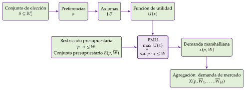
Fuente: elaboración propia.
El análisis se apoya en estos supuestos:
contexto estático y sin incertidumbre [ver tema 3.A.10];
información perfecta sobre bienes y precios;
el consumidor es precio-aceptante y puede comprar cualquier cantidad (bienes perfectamente divisibles, sin costes de transacción);
la decisión de consumo se separa de la de oferta de trabajo [ver tema 3.A.25] y de las decisiones intertemporales [ver tema 3.A.29], y
los bienes son homogéneos: la utilidad depende solo de las cantidades consumidas de cada bien.
I.1. Preferencias y funciones de utilidad
En el cante: conjunto de elección, relación de preferencia, los siete axiomas con el teorema de Debreu, la utilidad ordinal, las curvas de indiferencia, la RMS y la elasticidad de sustitución, nombrando los tres casos de la CES. Se dibuja el gráfico 3, añadiendo un axioma cada vez. Los cuatro casos de la relación binaria, las propiedades del conjunto de elección, la cuasiconcavidad en tres dimensiones y el detalle de la CES son de profundización.
I.1.1. Conjunto de elección
Los consumidores definen sus preferencias sobre el conjunto de elección \(S\subseteq\mathbb{R}^n_+\), el conjunto de todas las cestas de bienes \(x\equiv(x_1,x_2,\dots,x_n)\): vectores de \(n\) componentes, donde \(n\) es el número de bienes y cada componente es la cantidad consumida del bien correspondiente.24
\(S\) cumple unas propiedades mínimas:
es no vacío;
es cerrado: incluye su frontera, de modo que el límite de una sucesión de cestas factibles también es factible;
está acotado inferiormente por la cesta nula, \(0\in S\): las cantidades consumidas nunca son negativas;
es convexo: dadas dos cestas factibles, cualquier combinación convexa de ellas también lo es, \(\lambda x'+(1-\lambda)x''\in S\) para todo \(\lambda\in[0,1]\). Implica la perfecta divisibilidad de los bienes.
I.1.2. Preferencias
El consumidor tiene unas preferencias, una relación binaria que le permite escoger entre pares de alternativas del conjunto de elección. Escribimos \(x^0\succcurlyeq x^1\) para indicar que \(x^0\) es al menos tan buena como \(x^1\).
De esta relación de preferencia débil se derivan las otras dos:
preferencia estricta: \(x^0\succ x^1 \Leftrightarrow x^0\succcurlyeq x^1\) y no \(x^1\succcurlyeq x^0\);
indiferencia: \(x^0\sim x^1 \Leftrightarrow x^0\succcurlyeq x^1\) y \(x^1\succcurlyeq x^0\).
Entre dos cestas cualesquiera caben cuatro casos lógicos: \(x^0\succ x^1\), \(x^1\succ x^0\), \(x^0\sim x^1\) o que no sean comparables (ni \(x^0\succcurlyeq x^1\) ni \(x^1\succcurlyeq x^0\)).
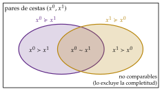
Fuente: elaboración propia a partir de Osborne y Rubinstein (2020).
I.1.3. Axiomas sobre las preferencias
Supondremos que la relación \(\succcurlyeq\) cumple los siguientes axiomas (tabla 1).25
| Grupo | Axioma | Qué garantiza |
|---|---|---|
| Racionalidad | 1. Completitud | Toda cesta es comparable con cualquier otra |
| (preorden completo) | 2. Reflexividad | Cada cesta está en un conjunto de indiferencia |
| 3. Transitividad | Los conjuntos de indiferencia no se cortan | |
| Regularidad | 4. Continuidad | Con 1-3, existe una función de utilidad continua (Debreu) |
| 5. Deseabilidad | Curvas «finas» y decrecientes; se agota la renta | |
| 6. Convexidad (6\('\). estricta) | Utilidad (estrictamente) cuasicóncava; demanda única | |
| 7. Diferenciabilidad | Curvas de indiferencia sin vértices; uso del cálculo |
Fuente: elaboración propia a partir de Mas-Colell, Whinston, y Green (1995, cap. 3) y Debreu (1959, cap. 4).
Axiomas de preorden completo (racionalidad)
Completitud: ante dos cestas cualesquiera, el consumidor siempre es capaz de compararlas: \(\forall x^0,x^1\in S\), \(x^0\succcurlyeq x^1\) o \(x^1\succcurlyeq x^0\) (o ambas). Descarta el caso de cestas no comparables.26
Reflexividad:27 toda cesta es al menos tan buena como sí misma: \(\forall x^0\in S\), \(x^0\succcurlyeq x^0\). La indiferencia es reflexiva, pero la preferencia estricta no lo es.28
Transitividad: \(\forall x^0,x^1,x^2\in S\), si \(x^0\succcurlyeq x^1\) y \(x^1\succcurlyeq x^2\), entonces \(x^0\succcurlyeq x^2\). También la cumplen \(\sim\) y \(\succ\).29
Estos tres axiomas hacen de \(\succcurlyeq\) un preorden completo30 en \(S\), que es lo que entendemos por racionalidad. La relación permite particionar el conjunto de elección: todas las cestas (completitud) se clasifican en conjuntos de indiferencia (reflexividad) y cada cesta pertenece a uno solo de ellos (transitividad).
Axiomas de regularidad
Además, es deseable que las preferencias cumplan los axiomas de regularidad (4 a 7), que dan a los conjuntos de indiferencia una estructura particular.31
Continuidad: para toda cesta \(x^0\), los conjuntos de contorno superior \(\{x\in S: x\succcurlyeq x^0\}\) e inferior \(\{x\in S: x^0\succcurlyeq x\}\) son cerrados. Intuitivamente, no hay «saltos» en las preferencias: si \(x\succ y\), las cestas suficientemente próximas a \(x\) siguen siendo preferidas a \(y\).
Deseabilidad: expresa la preferencia del consumidor por la cantidad. Tiene varios grados; de más general a más exigente:
No saturación global: no existe un punto de saturación absoluta (bliss point): siempre hay alguna cesta mejor.
Insaciabilidad local: para toda cesta \(x\) y todo entorno de \(x\), por pequeño que sea, existe en él una cesta \(y\succ x\). Impide que los conjuntos de indiferencia sean «gruesos» y basta para que el consumidor agote su renta (ley de Walras).
Monotonía: si una cesta tiene más de todos los bienes que otra, es estrictamente preferida: \(x\gg y\Rightarrow x\succ y\). Implica la insaciabilidad local; las curvas de indiferencia son no crecientes (pueden tener tramos horizontales o verticales) y las mejores están al nordeste.
Monotonía estricta: basta tener más de algún bien y no menos de ninguno: \(x\geq y\), \(x\neq y\Rightarrow x\succ y\). Las curvas de indiferencia son estrictamente decrecientes.34
Cada grado implica los anteriores: monotonía estricta \(\Rightarrow\) monotonía \(\Rightarrow\) insaciabilidad local \(\Rightarrow\) no saturación global.
Convexidad: el conjunto de contorno superior \(\{x\in S: x\succcurlyeq x^0\}\) es convexo; es decir, si \(x^1\succcurlyeq x^0\) y \(x^2\succcurlyeq x^0\), entonces \(\lambda x^1+(1-\lambda)x^2\succcurlyeq x^0\) para todo \(\lambda\in[0,1]\). Expresa la preferencia por la diversificación y hace que la función de utilidad sea cuasicóncava, con lo que las condiciones de primer orden del PMU son también suficientes.35 Aun así, permite tramos rectos en las curvas de indiferencia, y con ellos soluciones múltiples.
6\('\). Convexidad estricta: si \(x^1\sim x^0\) y \(x^1\neq x^0\), entonces \(\lambda x^1+(1-\lambda)x^0\succ x^0\) para todo \(\lambda\in(0,1)\). Elimina los tramos rectos y garantiza que la demanda sea única.36
Diferenciabilidad: la curva de indiferencia tiene una única pendiente en cada punto; se eliminan los vértices. No es un axioma sobre el comportamiento, sino un supuesto de conveniencia técnica: permite usar el cálculo diferencial.
La convexidad de las curvas de indiferencia no exige utilidades marginales decrecientes, ni estas la garantizan: con dos bienes, si \(U_{11},U_{22}<0\) las curvas son convexas cuando además \(U_{12}\geq 0\), pero pueden no serlo si \(U_{12}\) es muy negativa. Además, la utilidad marginal decreciente no es una propiedad ordinal: \(U=x_1x_2\) tiene utilidades marginales constantes en cada bien y \(U=(x_1x_2)^2\) crecientes, y ambas representan las mismas preferencias convexas. Lo que importa es que la relación marginal de sustitución sea decreciente.
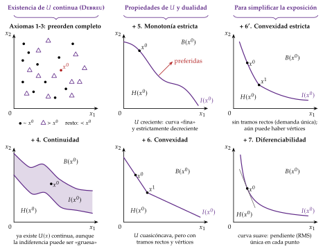
Fuente: elaboración propia a partir de Segura (1986).
Si se cumplen todos estos axiomas, las preferencias son regulares (de buen comportamiento) y también lo será la función de utilidad que las represente.
I.1.4. Función de utilidad
Históricamente, «utilidad» designaba las sensaciones subjetivas (satisfacción, placer, cese de necesidades) que produce el consumo. A finales del siglo XIX se pensaba que podía medirse como se mide el peso, restar cantidades de utilidad y estudiar cómo varían, de donde surge la «ley de la utilidad marginal decreciente». Esa postura se fue abandonando conforme avanzaba la teoría.37
Hoy se acepta que la utilidad es ordinal: solo importa el orden que asigna a las cestas, y cualquier transformación creciente la representa igual. Una utilidad es cardinal si también importan las diferencias (solo admite transformaciones afines positivas), como la utilidad esperada de von Neumann y Morgenstern [ver tema 3.A.10].
Para construir la teoría de la elección basta con el conjunto de curvas de indiferencia. Pero es útil tener una función que asigne a cada cesta un número que indique su lugar en la ordenación, porque permite resolver el problema del consumidor con los métodos de maximización condicionada.
La función de utilidad es una función \(U: S\rightarrow\mathbb{R}\) que asigna a cada cesta un número real y representa las preferencias:38 \[\forall x^1,x^2\in S:\quad x^1\succcurlyeq x^2 \Leftrightarrow U(x^1)\geq U(x^2). \tag{1}\]
Con preferencias regulares, la función de utilidad tiene estas propiedades:
es continua, por la continuidad de las preferencias (axioma 4, teorema de Debreu); que sea además dos veces diferenciable es un supuesto adicional (axioma 7);
es creciente, por la monotonía (axioma 5); si además es diferenciable y se cumple la monotonía estricta, las utilidades marginales son positivas, \(U_i=\partial U/\partial x_i>0\);
es cuasicóncava (estrictamente cuasicóncava con el axioma 6\('\)): sus conjuntos de contorno superior \(\{x: U(x)\geq U(x^0)\}\) son convexos y las curvas de indiferencia, convexas;39
no es única: cualquier transformación monótona creciente de \(U\) representa las mismas preferencias.40,41
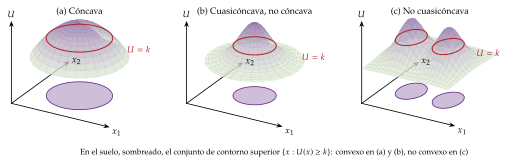
Fuente: elaboración propia a partir de Pérez Domínguez (2004).
I.1.5. Curvas de indiferencia, relación marginal de sustitución y elasticidad de sustitución
Una curva de indiferencia es el lugar geométrico de las cestas que dan la misma utilidad. Con dos bienes, diferenciando \(U(x_1,x_2)=\overline{U}\): \[dU=U_1\,dx_1+U_2\,dx_2=0 \;\Longrightarrow\; \left.\frac{dx_2}{dx_1}\right|_{U=\overline{U}}=-\frac{U_1}{U_2}. \tag{2}\]
Propiedades de las curvas de indiferencia (con preferencias regulares):
ordenan los niveles de utilidad y hay infinitas;
no se cortan, por la transitividad (el punto de corte tendría dos niveles de utilidad);
son continuas, por la continuidad (axioma 4);
dan más utilidad cuanto más alejadas del origen, por la monotonía (axioma 5);
tienen pendiente negativa, por la monotonía estricta (axioma 5);
son estrictamente convexas, por la convexidad estricta (axioma 6\('\)): la sustituibilidad entre bienes es imperfecta;
no tienen vértices, por la diferenciabilidad (axioma 7).
La relación marginal de sustitución (RMS) es la cantidad del bien 2 a la que el consumidor está dispuesto a renunciar a cambio de una unidad más del bien 1 manteniendo su utilidad. Aplicando el teorema de la función implícita a (2):42 \[RMS_{12}\equiv-\left.\frac{dx_2}{dx_1}\right|_{U=\overline{U}}=\frac{U_1}{U_2}, \tag{3}\] es decir, la RMS es el valor absoluto de la pendiente de la curva de indiferencia y equivale al cociente de las utilidades marginales.
La convexidad implica que la RMS disminuye a medida que descendemos por la curva de indiferencia, es decir, conforme aumenta \(x_1\).
La RMS mide la sustituibilidad entre bienes, pero depende de las unidades en que se miden. Por eso se define la elasticidad de sustitución: el cociente entre la variación porcentual de la proporción entre los dos bienes y la variación porcentual de la RMS. Es un número puro que mide la curvatura de la curva de indiferencia: \[\sigma\equiv\frac{d\ln(x_2/x_1)}{d\ln RMS_{12}}=\frac{d(x_2/x_1)}{dRMS_{12}}\cdot\frac{RMS_{12}}{x_2/x_1}. \tag{4}\]
Cuanto mayor es \(\sigma\), más fácil es sustituir un bien por otro: basta una pequeña variación de la RMS para acomodar un cambio grande en la proporción de los bienes. Una elasticidad alta supone que las utilidades marginales son poco sensibles a la proporción de los bienes (con preferencias lineales, sustitutivos perfectos, \(\sigma=\infty\)); una baja, que son muy sensibles (con preferencias de Leontief, complementarios perfectos, \(\sigma=0\)).
La función de utilidad de elasticidad de sustitución constante (CES) tiene \(\sigma\) constante: \[U=A\left[\sum_{i=1}^{n}a_i\,x_i^{\frac{\sigma-1}{\sigma}}\right]^{\frac{\sigma}{\sigma-1}},\qquad A,a_i>0. \tag{5}\] Incluye como casos particulares las formas más usadas:43
\(\sigma\to 0\): Leontief (complementarios perfectos), \(U=\min\{x_1/a;\,x_2/b\}\);
\(\sigma\to 1\): Cobb-Douglas, \(U=A\,x_1^{\alpha}x_2^{1-\alpha}\) con \(\alpha=a_1/(a_1+a_2)\) (cualquier transformación creciente, como \(x_1^{\alpha}x_2^{\beta}\), representa las mismas preferencias);
\(\sigma\to\infty\): lineal (sustitutivos perfectos), \(U=a\,x_1+b\,x_2\).
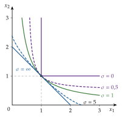
Fuente: elaboración propia a partir de Besanko, Braeutigam, y Gibbs (2020).
I.2. Restricción presupuestaria y función de demanda individual
En el cante: el conjunto presupuestario y la recta de balance, el PMU con las condiciones de Kuhn y Tucker, la solución interior (\(RMS_{12}=p_1/p_2\), segunda ley de Gossen) y la de esquina, y las propiedades de la demanda marshalliana (homogeneidad de grado cero, ley de Walras, continuidad). De la función indirecta de utilidad basta la definición y la identidad de Roy. Los teoremas de optimización y las propiedades de la FIU son de profundización.
I.2.1. Conjunto presupuestario y recta de balance
La restricción presupuestaria recoge la limitación que impone al consumidor su renta. Se suponen dos cosas:
los bienes se intercambian en el mercado a precios positivos y conocidos por todos los consumidores;
los precios son paramétricos: no varían con la cantidad comprada y el consumidor no puede influir en ellos (es precio-aceptante).
Una cesta es asequible si su coste no excede la renta del consumidor, \(\overline{W}\):44 \[p\cdot x=p_1x_1+p_2x_2+\dots+p_nx_n\leq\overline{W}. \tag{6}\]
Con el requisito de que la cesta pertenezca al conjunto de elección, las cestas posibles forman el conjunto presupuestario walrasiano, \(B(p,\overline{W})=\{x\in S: p\cdot x\leq\overline{W}\}\).
Sus propiedades:45 (i) es no vacío: siempre contiene la cesta nula; (ii) es cerrado; (iii) es acotado si todos los precios son estrictamente positivos (\(p\gg 0\));46 (iv) es convexo: contiene toda combinación convexa de dos de sus cestas.
Con dos bienes, la frontera del conjunto es la recta de balance, \(p_1x_1+p_2x_2=\overline{W}\), cuya pendiente, \(-p_1/p_2\), es el coste de oportunidad del bien 1 en términos del bien 2 que fija el mercado, constante a lo largo de la recta.
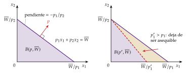
Fuente: elaboración propia a partir de Mas-Colell, Whinston, y Green (1995).
I.2.2. El problema de maximización de la utilidad
Con unas preferencias representadas por una función de utilidad y un conjunto presupuestario con las propiedades anteriores, el problema de maximización de la utilidad (o problema primal) es: \[\max_{x_1,\dots,x_n}\ U(x_1,\dots,x_n)\quad\text{s.a.}\quad \sum_{i=1}^{n}p_ix_i\leq\overline{W},\quad x_i\geq 0. \tag{7}\]
Con una utilidad continua y estrictamente cuasicóncava y un conjunto presupuestario no vacío, compacto y convexo, el óptimo existe, es global y es único.
Teoremas básicos de la optimización condicionada47
Existencia (Weierstrass): si la función objetivo es continua y el conjunto factible es compacto y no vacío, existe un máximo.
Local-global: si la función objetivo es estrictamente cuasicóncava y el conjunto factible es convexo, todo máximo local es global.
Unicidad: en esas mismas condiciones (estricta cuasiconcavidad y conjunto convexo), el máximo es único.
Suficiencia (Arrow y Enthoven, 1961): si la función objetivo es cuasicóncava, las restricciones son cuasiconvexas y el gradiente de la función objetivo no se anula, las condiciones de Kuhn-Tucker son suficientes.48
Como el problema tiene restricciones de desigualdad, se resuelve con el método de Kuhn y Tucker (1951),49 a partir de la función lagrangiana: \[\mathcal{L}=U(x_1,\dots,x_n)+\lambda\left(\overline{W}-\sum_{i=1}^{n}p_ix_i\right). \tag{8}\]
El multiplicador \(\lambda\) es un precio sombra: mide cuánto aumenta la utilidad máxima al aumentar marginalmente la renta, es decir, la utilidad marginal de la renta.50
Las condiciones de Kuhn-Tucker para que \(x^*\) sea solución son: \[\begin{aligned} &\frac{\partial\mathcal{L}}{\partial x_i}=U_i-\lambda p_i\leq 0,\qquad x_i\geq 0,\qquad x_i\,(U_i-\lambda p_i)=0,\qquad\forall i; \tag{9}\\ &\overline{W}-p\cdot x\geq 0,\qquad \lambda\geq 0,\qquad \lambda\,(\overline{W}-p\cdot x)=0. \tag{10} \end{aligned}\]
La primera condición dice que la utilidad marginal de cada bien no puede superar su coste en términos de utilidad, \(\lambda p_i\) (el precio por la utilidad marginal de la renta).
La holgura complementaria dice que, para cada bien, al menos una de las dos desigualdades se cumple con igualdad: o el bien se consume (\(x_i>0\)), y entonces \(U_i=\lambda p_i\) (la última unidad monetaria gastada en él rinde \(\lambda\)), o no se consume (\(x_i=0\)), y entonces \(U_i\leq\lambda p_i\): el bien «no compensa» a esos precios. Si se cumplen ambas igualdades a la vez, la solución de esquina es degenerada.
Por la insaciabilidad local, \(\lambda>0\) y la restricción presupuestaria se satura: el consumidor gasta toda su renta (ley de Walras).
Con una utilidad cuasicóncava, las condiciones de primer orden son también suficientes (teorema de Arrow y Enthoven).
I.2.3. Solución interior y solución de esquina
En una solución interior (\(x_i^*>0\) para todo \(i\)), la condición (9) se cumple con igualdad para todos los bienes y, despejando \(\lambda\): \[\frac{U_1}{p_1}=\frac{U_2}{p_2}=\dots=\frac{U_n}{p_n}=\lambda. \tag{11}\] El consumidor reparte su renta de modo que la utilidad marginal por unidad monetaria es la misma en todos los bienes: es la segunda ley de Gossen (pág. ).
Con dos bienes, la tasa a la que el consumidor está dispuesto a intercambiar los bienes (RMS) se iguala a la que fija el mercado (cociente de precios): la curva de indiferencia es tangente a la recta de balance. \[RMS_{12}=\frac{U_1}{U_2}=\frac{p_1}{p_2}. \tag{12}\]
En una solución de esquina, algún bien no se consume y la tangencia no tiene por qué cumplirse. Si solo se compra el bien 1 (\(x_2^*=0\)), en el óptimo \(\frac{U_1}{p_1}=\lambda\geq\frac{U_2}{p_2}\), es decir, \(RMS_{12}\geq p_1/p_2\): incluso en la esquina, el consumidor valora el bien 1, en términos del bien 2, más de lo que le cuesta en el mercado. Para los bienes que sí se consumen se obtienen igualmente sus funciones de demanda.
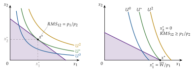
Se trabaja con curvas de indiferencia estrictamente convexas, pero conviene saber qué ocurre si no lo son: la tangencia deja de ser suficiente (puede ser un mínimo de utilidad sobre la recta de balance), la solución puede estar en una esquina o ser múltiple y la demanda puede ser discontinua (salta de un extremo a otro al variar el precio). Con preferencias cóncavas, el óptimo está siempre en una esquina.
I.2.4. La función de demanda marshalliana
La solución del PMU es una cesta: el vector de cantidades óptimas (y el valor del multiplicador en el óptimo). Como el sistema de condiciones de primer orden permite expresar esas cantidades como funciones de los parámetros,51 se obtiene el sistema completo de ecuaciones de demanda marshalliana (SCEDM), también llamada ordinaria o walrasiana: \[x^*=x(p,\overline{W})=\begin{pmatrix} x_1(p_1,\dots,p_n,\overline{W})\\ \vdots\\ x_n(p_1,\dots,p_n,\overline{W})\end{pmatrix}. \tag{13}\]
Sus propiedades:
Existe y es única.52
Es continua en \((p,\overline{W})\).53
Es homogénea de grado cero en \((p,\overline{W})\): \(x(kp,k\overline{W})=x(p,\overline{W})\) para todo \(k>0\).54 El consumidor no sufre ilusión monetaria: solo importan los precios relativos y la renta real, de modo que puede tomarse cualquier bien como numerario.
Cumple la ley de Walras:55 \(p\cdot x(p,\overline{W})=\overline{W}\). Por la insaciabilidad local, el consumidor agota su renta.
Con cierta generalidad, es diferenciable en \((p,\overline{W})\).56
I.2.5. La función indirecta de utilidad
Sustituyendo la demanda en la función objetivo se obtiene la función valor del problema primal, la función indirecta de utilidad (FIU): la utilidad máxima que se alcanza con unos precios y una renta dados, \[V(p,\overline{W})=U\big(x(p,\overline{W})\big)=\max_{x}\left\{U(x)\ :\ p\cdot x\leq\overline{W},\ x\geq 0\right\}. \tag{14}\] La utilidad depende indirectamente de los precios y la renta, a través de la maximización, mientras que \(U(x)\) depende directamente de las cantidades.
Propiedades de la FIU:57
es continua en \((p,\overline{W})\);
es homogénea de grado cero en \((p,\overline{W})\): un cambio equiproporcional de precios y renta no altera la cesta elegida ni, por tanto, el bienestar;
es estrictamente creciente en la renta y no creciente en los precios;
es cuasiconvexa en \((p,\overline{W})\): el conjunto \(\{(p,\overline{W}): V(p,\overline{W})\leq\bar v\}\) es convexo. Toda cesta asequible con un presupuesto promedio \(\big(\lambda p+(1-\lambda)p',\ \lambda\overline{W}+(1-\lambda)\overline{W}'\big)\) es asequible con al menos uno de los dos presupuestos extremos; por tanto, la utilidad alcanzable con el promedio no supera la mayor de las dos. No depende de la convexidad de las preferencias;
cumple la identidad de Roy (1947):58 si \(V\) es diferenciable, \[x_i(p,\overline{W})=-\frac{\partial V(p,\overline{W})/\partial p_i}{\partial V(p,\overline{W})/\partial\overline{W}},\qquad\forall i=1,\dots,n. \tag{15}\] Es decir, las demandas marshallianas pueden obtenerse directamente de la FIU derivando.
Si con los mismos ingredientes se «da la vuelta» al problema (minimizar el gasto necesario para alcanzar un nivel de utilidad), se llega al mismo equilibrio y aparecen nuevas relaciones entre las funciones de ambos enfoques, primal y dual, que enriquecen la teoría: es la dualidad [ver tema 3.A.9].
I.3. Agregación: condiciones y problemas asociados al efecto renta nulo
En el cante: suma horizontal, dependencia de la distribución de la renta, forma polar de Gorman (curvas de Engel rectas y paralelas), sus dos casos (homotéticas idénticas y cuasilineales), el consumidor representativo y las ventajas y problemas del efecto renta nulo, con el teorema de Sonnenschein-Mantel-Debreu en una frase.
La demanda de mercado de un bien es la suma de las demandas individuales de los \(H\) consumidores: \[X_i(p,\overline{W}_1,\dots,\overline{W}_H)=\sum_{h=1}^{H}x_{hi}(p,\overline{W}_h). \tag{16}\] Gráficamente es la suma horizontal de las curvas de demanda individuales. Siempre puede calcularse si los consumidores son precio-aceptantes y no hay externalidades de consumo. Si las propiedades de la demanda agregada se derivan de las individuales, tienen un fundamento en la conducta de los agentes y no son formulaciones ad hoc.
Primer problema: ¿depende solo de la renta total? En general, la demanda agregada depende de toda la distribución de la renta, no solo de \(\overline{W}=\sum_h\overline{W}_h\): una redistribución que deje igual la renta total cambia la demanda si los consumidores tienen efectos renta distintos.
Condición de Gorman (1953): la demanda agregada depende solo de los precios y de la renta total, para cualquier reparto, si y solo si la función indirecta de utilidad de cada consumidor admite59 la forma polar de Gorman:60 \[V_h(p,\overline{W}_h)=a_h(p)+b(p)\,\overline{W}_h, \tag{17}\] con \(b(p)\) común a todos.61 Por la identidad de Roy, equivale a que las curvas de Engel sean rectas y paralelas entre consumidores: el efecto renta \(\partial x_{hi}/\partial\overline{W}_h\) es el mismo para todos, de modo que lo que gana uno al recibir renta lo compensa exactamente lo que pierde el que la cede.62
Casos particulares:
preferencias homotéticas idénticas (\(a_h(p)=0\)): curvas de Engel rectas que salen del origen;
preferencias cuasilineales respecto al mismo bien numerario, \(U_h=x_0+\phi_h(x_1,\dots,x_n)\): la demanda de los bienes distintos del numerario no depende de la renta (efecto renta nulo; curvas de Engel paralelas al eje de la renta).
Si se cumple, la economía se comporta como un consumidor representativo cuya demanda es la agregada. Para que además tenga sentido normativo hace falta una regla de reparto de la renta que maximice una función de bienestar social [ver tema 3.A.24]. Muellbauer (1975, 1976) generaliza la agregación a las preferencias PIGL y PIGLOG, en las que la demanda agregada depende de un nivel «representativo» de renta; es la base del sistema AIDS [ver tema 3.A.9].63
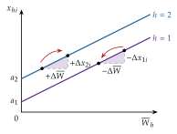
Fuente: elaboración propia a partir de Mas-Colell, Whinston, y Green (1995, cap. 4).
El efecto renta nulo (preferencias cuasilineales) es el caso más usado en equilibrio parcial porque:
la demanda de cada bien depende solo de los precios, y la agregación es inmediata;
la demanda marshalliana coincide con la hicksiana (la que mantiene constante la utilidad), y el excedente del consumidor es una medida exacta del bienestar [ver tema 3.A.9] [ver tema 3.A.16].
Problemas del efecto renta nulo:
descarta los bienes inferiores y los bienes Giffen, y contradice la evidencia de las curvas de Engel (ley de Engel);
exige que toda la renta adicional vaya al numerario, lo que solo es razonable para bienes que pesan poco en el gasto;
si la renta de algún consumidor es baja, aparecen soluciones de esquina en el numerario y la forma deja de valer;
no es necesario para agregar (basta la forma de Gorman) y, a la inversa, no resuelve el problema si los consumidores no comparten el mismo bien numerario.
Segundo problema: ¿hereda la demanda agregada las propiedades de la individual? Solo en parte. Se conservan la continuidad, la homogeneidad de grado cero y la ley de Walras, pero no el axioma débil de la preferencia revelada ni la simetría y negatividad de la matriz de Slutsky: los efectos renta de consumidores distintos no se cancelan. El teorema de Sonnenschein-Mantel-Debreu (1973-1974) muestra que cualquier función continua, homogénea de grado cero y que cumpla la ley de Walras puede ser la función de exceso de demanda agregada de alguna economía: no se garantizan la unicidad ni la estabilidad del equilibrio [ver tema 3.A.21].64
La demanda de mercado solo depende de los precios y de la renta total, como la de un consumidor representativo, si las curvas de Engel de todos los consumidores son rectas y paralelas (forma polar de Gorman). El efecto renta nulo es el caso más cómodo, pero también el más restrictivo.
II. Estática comparativa7 min
En el cante: efecto renta (unos 2 minutos), efecto precio propio (3) y efecto precio cruzado (2). Se dibujan la curva de renta-consumo con la curva de Engel (gráfico 9) y la descomposición de Slutsky con la curva de demanda (gráfico 12), que es el gráfico central del tema. Las tablas de clasificación se cantan por categorías, sin leerlas. La derivación de la ecuación de Slutsky y las propiedades de la matriz de Slutsky corresponden a [ver tema 3.A.9]: aquí solo se enuncian.
Hasta aquí hemos respondido a la primera pregunta: qué cesta elige el consumidor. Ahora respondemos a la segunda: cómo cambia esa elección cuando cambian los parámetros del problema, es decir, la renta y los precios.
Comparar el óptimo antes y después de un cambio en un parámetro, sin estudiar el proceso de ajuste, es la estática comparativa. Como la demanda marshalliana es diferenciable (apartado I.2), basta estudiar sus derivadas parciales, que suelen expresarse como elasticidades: números puros, que no dependen de las unidades de medida.65
La elasticidad es una medida local: se evalúa en cada combinación de precios y renta. La clasificación de un bien vale, por tanto, en ese punto: un mismo bien puede ser normal a unos niveles de renta e inferior a otros, u ordinario a unos precios y Giffen a otros.
II.1. Efecto renta
II.1.1. Curva de renta-consumo y curva de Engel
Al aumentar la renta con los precios constantes, la recta de balance se desplaza en paralelo hacia fuera y se obtiene un nuevo óptimo. Uniendo los óptimos correspondientes a todos los niveles de renta, dados los precios y las preferencias, se obtiene la curva de renta-consumo (CRC) o senda de expansión de la renta.
Si los dos bienes son normales, tiene pendiente positiva; en el tramo en que uno de ellos es inferior, la pendiente es negativa.
Con preferencias homotéticas, la CRC es una semirrecta que parte del origen: la proporción en que se consumen los bienes no depende de la renta.66
Llevando cada óptimo a un plano \((\overline{W},x_i)\) se obtiene la curva de Engel del bien \(i\), que relaciona la cantidad demandada con la renta, dados los precios: \(x_i=x_i(\bar{p},\overline{W})\).67
Su pendiente es el efecto renta del bien \(i\), \(\partial x_i(p,\overline{W})/\partial\overline{W}\). El bien es normal en \((p,\overline{W})\) si el efecto renta es positivo (curva de Engel creciente) e inferior si es negativo (curva decreciente).
Un bien puede ser normal hasta cierto nivel de renta e inferior a partir de él (gráfico 9, panel derecho). Es lo que ocurre con bienes que el consumidor sustituye por otros de más calidad cuando su renta aumenta; pueden servir de ejemplo la comida rápida o las marcas blancas.
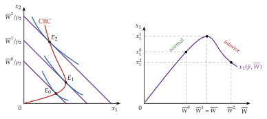
Fuente: elaboración propia a partir de Mas-Colell, Whinston, y Green (1995, párr. 2.E).
II.1.2. Elasticidad-renta
La elasticidad-renta mide la variación porcentual de la cantidad demandada de un bien ante una variación porcentual de la renta: \[\varepsilon_{x_i,\overline{W}}\equiv\frac{\partial x_i(p,\overline{W})}{\partial\overline{W}}\cdot\frac{\overline{W}}{x_i}. \tag{18}\]
Según su valor, los bienes se clasifican (tabla 2) en:
inferiores, si \(\varepsilon_{x_i,\overline{W}}<0\): el consumo disminuye al aumentar la renta;
independientes de la renta, si \(\varepsilon_{x_i,\overline{W}}=0\) (curva de Engel paralela al eje de la renta, como en los bienes distintos del numerario con preferencias cuasilineales);
normales, si \(\varepsilon_{x_i,\overline{W}}>0\), que a su vez pueden ser:
necesarios (o de primera necesidad), si \(0<\varepsilon_{x_i,\overline{W}}<1\): el consumo aumenta menos que proporcionalmente con la renta, de modo que su peso en el gasto disminuye;
de lujo, si \(\varepsilon_{x_i,\overline{W}}>1\): su peso en el gasto aumenta con la renta.
La ley de Engel (1857) es la regularidad empírica más conocida de la demanda: la proporción del gasto que los hogares dedican a la alimentación disminuye a medida que aumenta su renta. Los alimentos son, en conjunto, un bien necesario.68
Se sigue cumpliendo. En España, los hogares del quintil de menor gasto dedicaron en 2025 el 19,6 % de su presupuesto a alimentos y bebidas no alcohólicas, frente al 12,3 % del quintil de mayor gasto; la media fue el 16,0 % (gráfico 10). La relación solo se rompe, ligeramente, entre los dos primeros quintiles.69,70
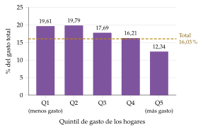
Fuente: INE, Encuesta de Presupuestos Familiares 2025, tabla 73828 (consulta: 10/10/2026).
II.1.3. Agregación de Engel
Además de ser continua, homogénea de grado cero y cumplir la ley de Walras (apartado I.2), la demanda marshalliana debe cumplir ciertas restricciones que se derivan de la restricción presupuestaria. La primera es la agregación de Engel. Partiendo de la ley de Walras, \(\sum_{i}p_ix_i(p,\overline{W})=\overline{W}\), que se cumple por la insaciabilidad local, y derivando respecto a la renta: \[\sum_{i=1}^{n}p_i\frac{\partial x_i}{\partial\overline{W}}=1\quad\Longrightarrow\quad\sum_{i=1}^{n}\underbrace{\frac{p_ix_i}{\overline{W}}}_{s_i}\cdot\underbrace{\frac{\partial x_i}{\partial\overline{W}}\frac{\overline{W}}{x_i}}_{\varepsilon_{x_i,\overline{W}}}=1\quad\Longrightarrow\quad\sum_{i=1}^{n}s_i\,\varepsilon_{x_i,\overline{W}}=1, \tag{19}\] donde \(s_i=p_ix_i/\overline{W}\) es la participación del bien \(i\) en el gasto.
La media de las elasticidades-renta, ponderada por las participaciones en el gasto, es igual a uno: cuando aumenta la renta, el gasto total aumenta en la misma cuantía.
Por tanto, no todos los bienes pueden ser inferiores ni tener elasticidad-renta nula: si aumenta la renta y el consumidor la gasta toda, no puede comprar menos de todos los bienes. Más aún, al menos un bien ha de tener una elasticidad-renta igual o mayor que uno.
II.2. Efecto precio propio
II.2.1. Curva de precio-consumo y curva de demanda
Al variar el precio de un bien, ceteris paribus, cambia la pendiente de la recta de balance, que gira sobre su corte con el eje del otro bien, y se obtiene un nuevo óptimo. Uniendo los óptimos que corresponden a cada precio se obtiene la curva de precio-consumo (CPC).
Llevando cada par de precio y cantidad óptima a un plano \((x_1,p_1)\) se obtiene la curva de demanda ordinaria o marshalliana del bien, \(x_1(p_1;\,p_2,\overline{W})\), para unos precios de los demás bienes y una renta dados (gráfico 11). Un cambio en esos otros parámetros desplaza la curva.
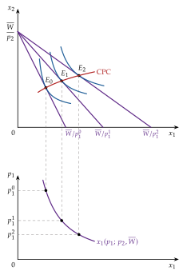
Fuente: elaboración propia a partir de Varian (2016, cap. 6).
II.2.2. Elasticidad-precio propio
La elasticidad-precio propio mide la variación porcentual de la cantidad demandada de un bien ante una variación porcentual de su precio: \[\varepsilon_{x_i,p_i}\equiv\frac{\partial x_i(p,\overline{W})}{\partial p_i}\cdot\frac{p_i}{x_i}. \tag{20}\]
Si \(\varepsilon_{x_i,p_i}<0\), el bien es ordinario: la curva de demanda tiene pendiente negativa. Si \(\varepsilon_{x_i,p_i}=0\), la demanda es rígida (curva vertical). Si \(\varepsilon_{x_i,p_i}>0\), es un bien Giffen: la demanda aumenta cuando sube el precio.
Entre los bienes ordinarios, la demanda es elástica si \(\varepsilon_{x_i,p_i}<-1\) e inelástica si \(-1<\varepsilon_{x_i,p_i}<0\). Como \(\partial(p_ix_i)/\partial p_i=x_i\,(1+\varepsilon_{x_i,p_i})\), al subir el precio el gasto en el bien disminuye si la demanda es elástica y aumenta si es inelástica.
| Elasticidad | Valor | Tipo de bien |
|---|---|---|
| Renta, \(\varepsilon_{x_i,\overline{W}}\) | \(<0\) | Inferior |
| \(=0\) | Independiente de la renta | |
| \((0,1)\) | Normal necesario | |
| \(>1\) | Normal de lujo | |
| Precio propio, \(\varepsilon_{x_i,p_i}\) | \(>0\) | Giffen (siempre inferior) |
| \(=0\) | Demanda rígida | |
| \((-1,0)\) | Ordinario, demanda inelástica | |
| \(<-1\) | Ordinario, demanda elástica |
Fuente: elaboración propia.
II.2.3. Efecto sustitución y efecto renta: la ecuación de Slutsky
Una variación del precio de un bien tiene dos consecuencias: cambia su precio relativo y cambia el poder adquisitivo del consumidor. Para separarlas, se compensa la renta del consumidor de modo que su renta real se mantenga constante.71
Para ello se usa la demanda compensada o hicksiana, \(h_i(p,\overline{U})\): la cantidad que demandaría el consumidor si, al cambiar los precios, se ajustara su renta para mantenerle en el mismo nivel de utilidad \(\overline{U}\). Es la solución del problema de minimización del gasto, el dual del PMU [ver tema 3.A.9].
La ecuación de Slutsky (1915) descompone el efecto total de una variación del precio propio en dos:72,73 \[\underbrace{\frac{\partial x_i(p,\overline{W})}{\partial p_i}}_{\text{efecto total}}=\underbrace{\frac{\partial h_i(p,\overline{U})}{\partial p_i}}_{\text{efecto sustitución}}\quad\underbrace{-\,x_i\,\frac{\partial x_i(p,\overline{W})}{\partial\overline{W}}}_{\text{efecto renta}}, \tag{21}\] evaluada en \(\overline{U}=V(p,\overline{W})\).
El efecto sustitución mide la variación de la demanda debida solo al cambio del precio relativo, manteniendo constante la utilidad. Es siempre no positivo, \(\partial h_i/\partial p_i\leq 0\): al encarecerse un bien, el consumidor lo sustituye por los que se han abaratado relativamente.74
El efecto renta mide la variación de la demanda debida al cambio del poder adquisitivo. Su signo depende del tipo de bien: al subir el precio cae la renta real, y el efecto renta es negativo para un bien normal y positivo para uno inferior. Su tamaño depende de lo que pesa el bien en el gasto.75
De la combinación de ambos efectos sale la clasificación de los bienes (tabla 3):
un bien normal es siempre ordinario, porque los dos efectos van en el mismo sentido (ley de la demanda);
un bien inferior es ordinario si el efecto sustitución domina al efecto renta, y es un bien Giffen si el efecto renta, de signo contrario, es mayor.76 Todo bien Giffen es inferior, pero no todo bien inferior es Giffen: hace falta además que pese mucho en el presupuesto.
| Bien | Efecto sustitución | Efecto renta | Efecto total |
|---|---|---|---|
| Normal | \(\leq 0\) | \(<0\) | \(<0\): ordinario |
| Independiente de la renta | \(\leq 0\) | \(=0\) | \(\leq 0\): ordinario |
| Inferior (ES domina) | \(\leq 0\) | \(>0\), menor que \(|\)ES\(|\) | \(<0\): ordinario |
| Inferior (ER domina) | \(\leq 0\) | \(>0\), mayor que \(|\)ES\(|\) | \(>0\): Giffen |
Fuente: elaboración propia.
Gráficamente (gráfico 12), una bajada del precio del bien 1 lleva al consumidor del óptimo \(A\) al óptimo \(C\). El efecto total se descompone en dos:
efecto sustitución (\(A\rightarrow B\)): al cambiar la pendiente de la recta de balance, y manteniendo la utilidad inicial, el consumidor pasa de \(A\) a \(B\), el punto de la curva de indiferencia inicial tangente a una recta con la nueva pendiente. Consume más del bien 1, que se ha abaratado relativamente, y menos del bien 2;
efecto renta (\(B\rightarrow C\)): el aumento del poder adquisitivo desplaza en paralelo la recta compensada hasta la nueva recta de balance. Si los dos bienes son normales, el consumidor compra más de ambos.
En el panel inferior se ve la consecuencia para las curvas de demanda: la marshalliana pasa por \(A\) y \(C\), y la hicksiana, por \(A\) y \(B\). Para un bien normal, la demanda compensada es más inclinada (menos elástica) que la ordinaria, porque solo recoge el efecto sustitución.
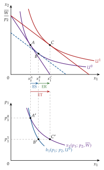
Fuente: elaboración propia a partir de Varian (2016, cap. 8) y Mas-Colell, Whinston, y Green (1995, párr. 3.G).
Distinto es el efecto Veblen: en el consumo ostentoso se valora el bien precisamente porque es caro, de modo que el precio entra en las preferencias.77 Al depender las preferencias de los precios, queda fuera del modelo que estamos analizando y no se explica con la ecuación de Slutsky. Leibenstein (1950) lo formaliza junto a los efectos «arrastre» (bandwagon) y «esnob».78
Para repasar (vídeos de Policonomics):
«A.9 Efectos de renta y sustitución»: https://www.youtube.com/watch?v=J0PSPX2B5FI
«A.10 Demandas marshalliana y hicksiana»: https://policonomics.com/es/video-a10-demandas-marshalliana-hicksiana/
II.3. Efecto precio cruzado
II.3.1. Elasticidad-precio cruzada: sustitutivos y complementarios brutos
La elasticidad-precio cruzada mide la variación porcentual de la cantidad demandada de un bien ante una variación porcentual del precio de otro: \[\varepsilon_{x_i,p_j}\equiv\frac{\partial x_i(p,\overline{W})}{\partial p_j}\cdot\frac{p_j}{x_i}. \tag{22}\]
Si \(\varepsilon_{x_i,p_j}>0\), el bien \(i\) es sustitutivo bruto del \(j\): si sube \(p_j\), aumenta \(x_i\).
Si \(\varepsilon_{x_i,p_j}=0\), el bien \(i\) es independiente del \(j\).
Si \(\varepsilon_{x_i,p_j}<0\), el bien \(i\) es complementario bruto del \(j\): si sube \(p_j\), disminuye \(x_i\).
Estas relaciones brutas se basan en la demanda marshalliana, que incluye los efectos renta, y por eso no son simétricas: el bien \(i\) puede ser sustitutivo bruto del \(j\) y, a la vez, el \(j\) complementario bruto del \(i\).
II.3.2. Ecuación de Slutsky cruzada: sustitutivos y complementarios netos
Ante variaciones del precio de otro bien, la ecuación de Slutsky también separa el efecto sustitución del efecto renta: \[\underbrace{\frac{\partial x_i(p,\overline{W})}{\partial p_j}}_{\text{efecto total cruzado}}=\underbrace{\frac{\partial h_i(p,\overline{U})}{\partial p_j}}_{\text{efecto sustitución cruzado}}\quad\underbrace{-\,x_j\,\frac{\partial x_i(p,\overline{W})}{\partial\overline{W}}}_{\text{efecto renta cruzado}}. \tag{23}\]
Con el efecto sustitución cruzado se definen las relaciones netas: los bienes son sustitutivos netos si \(\partial h_i/\partial p_j>0\) y complementarios netos si \(\partial h_i/\partial p_j<0\).
Los efectos sustitución cruzados son simétricos (\(\partial h_i/\partial p_j=\partial h_j/\partial p_i\)), de modo que la sustituibilidad y la complementariedad netas son relaciones simétricas, a diferencia de las brutas.
Además, por la homogeneidad de grado cero de la demanda compensada en los precios, \(\sum_j p_j\,\partial h_i/\partial p_j=0\); como el efecto sustitución propio es no positivo, cada bien ha de tener al menos un sustitutivo neto. Con solo dos bienes, ambos son sustitutivos netos.79
No todas las combinaciones de relaciones netas y brutas son posibles (tabla 4): si los bienes son sustitutivos netos y el bien \(i\) es inferior, solo pueden ser sustitutivos brutos; si son complementarios netos y el bien \(i\) es normal, solo pueden ser complementarios brutos.
| Efecto sustitución | Bien \(i\) | Efecto renta | Efecto total |
|---|---|---|---|
| \(>0\) (sustitutivos netos) | normal | \(<0\) | ambiguo: sustitutivos o complementarios brutos |
| inferior | \(>0\) | \(>0\): sustitutivos brutos | |
| \(<0\) (complementarios netos) | normal | \(<0\) | \(<0\): complementarios brutos |
| inferior | \(>0\) | ambiguo | |
| \(=0\) (independientes netos) | normal | \(<0\) | \(<0\): complementarios brutos |
| inferior | \(>0\) | \(>0\): sustitutivos brutos |
Fuente: elaboración propia a partir de Mas-Colell, Whinston, y Green (1995, párr. 3.G).
II.3.3. Agregación de Cournot y restricciones de la demanda
La segunda restricción que impone la restricción presupuestaria es la agregación de Cournot. Derivando la ley de Walras respecto al precio \(p_j\) y multiplicando por \(p_j/\overline{W}\): \[x_j+\sum_{i=1}^{n}p_i\frac{\partial x_i}{\partial p_j}=0\quad\Longrightarrow\quad\sum_{i=1}^{n}s_i\,\varepsilon_{x_i,p_j}=-s_j. \tag{24}\]
Al subir el precio de un bien, el consumidor ha de reajustar sus compras para seguir gastando exactamente su renta: la media de las elasticidades respecto a \(p_j\), ponderada por las participaciones en el gasto, es igual a la participación del bien \(j\) cambiada de signo.80
Con la restricción de homogeneidad en elasticidades (apartado I.2), la demanda marshalliana cumple, para todo \(i\) y todo \(j\): \[\underbrace{\sum_{j=1}^{n}\varepsilon_{x_i,p_j}+\varepsilon_{x_i,\overline{W}}=0}_{\text{homogeneidad}},\qquad\underbrace{\sum_{i=1}^{n}s_i\,\varepsilon_{x_i,\overline{W}}=1}_{\text{agregación de \textsc{Engel}}},\qquad\underbrace{\sum_{i=1}^{n}s_i\,\varepsilon_{x_i,p_j}=-s_j}_{\text{agregación de \textsc{Cournot}}}. \tag{25}\] Las dos agregaciones salen solo de la ley de Walras, y la homogeneidad, de que el conjunto presupuestario no cambie. La simetría y la negatividad de los efectos sustitución, en cambio, exigen que el consumidor maximice la utilidad [ver tema 3.A.9]. Son las restricciones contrastables de la teoría.
Un cambio de precio tiene un efecto sustitución, siempre no positivo, y un efecto renta, cuyo signo depende de que el bien sea normal o inferior (ecuación de Slutsky). Por eso la ley de la demanda vale siempre para la demanda compensada, pero para la marshalliana solo si el efecto renta no domina: el bien Giffen es la excepción. Las relaciones netas son simétricas; las brutas, no.
II.3.4. Valoración
La teoría neoclásica permite derivar la demanda individual con restricciones contrastables (homogeneidad, ley de Walras, agregaciones de Engel y Cournot, signo del efecto sustitución) y, con condiciones exigentes, la demanda de mercado. Sus principales limitaciones motivan los desarrollos del apartado III:
las preferencias y la utilidad no son observables: la teoría de la preferencia revelada parte de las elecciones observadas (III.1);
el consumidor solo compra bienes y no dedica tiempo a consumirlos: la producción doméstica incorpora el coste del tiempo (III.2);
los bienes son homogéneos y se caracterizan solo por su precio, sin explicar cómo se valoran su calidad y sus características: los precios hedónicos (III.3);
el análisis es estático y sin incertidumbre [ver tema 3.A.10] [ver tema 3.A.29].
III. Otros desarrollos7 min
En el cante: preferencia revelada (unos 3 minutos), producción doméstica (1,5) y precios hedónicos (2,5). La preferencia revelada y los precios hedónicos están en el título oficial; la producción doméstica, solo en la estructura que propuso el tribunal. Si falta tiempo, se acorta la producción doméstica a una frase, pero no se omite. Se dibujan el axioma débil, con el signo del efecto sustitución como segunda capa (gráfico 13), y la función hedónica de Rosen (gráfico 16). El axioma fuerte en gráfico y la obtención de las curvas de indiferencia son de profundización.
III.1. La teoría de la preferencia revelada
III.1.1. Idea
La teoría de la preferencia revelada, de Paul A. Samuelson (1938, 1948),81,82,83 no parte de unas preferencias y una función de utilidad, que no pueden observarse, sino de las elecciones que efectivamente hace el consumidor.
La teoría ordinal sigue un enfoque deductivo: formaliza unas preferencias, resuelve el problema del consumidor y obtiene la demanda. La preferencia revelada sigue un enfoque inductivo: se pregunta qué revelan las elecciones observadas sobre las preferencias y qué condiciones deben cumplir para ser coherentes.
III.1.2. Supuestos
Se parte de un consumidor individual84 que, ante cada vector de precios \(p\gg 0\) y cada renta \(\overline{W}\), elige una única cesta \(x(p,\overline{W})\) (supuesto de función de demanda) y gasta toda su renta, \(p\cdot x(p,\overline{W})=\overline{W}\) (ley de Walras).
III.1.3. El axioma débil de la preferencia revelada
Si, en la situación \((p^0,\overline{W}^0)\), el consumidor elige \(x^0\) cuando también podía comprar otra cesta \(x^1\neq x^0\), decimos que \(x^0\) se revela directamente preferida a \(x^1\).
Axioma débil de la preferencia revelada (ADPR): si \(x^0\) se revela directamente preferida a \(x^1\), entonces \(x^0\) no puede ser asequible cuando se elige \(x^1\): \[p^0\cdot x^1\leq p^0\cdot x^0,\quad x^1\neq x^0\quad\Longrightarrow\quad p^1\cdot x^0>p^1\cdot x^1. \tag{26}\] Es una exigencia de coherencia: el consumidor no puede revelar que prefiere \(x^0\) a \(x^1\) y, en otra situación, lo contrario.85
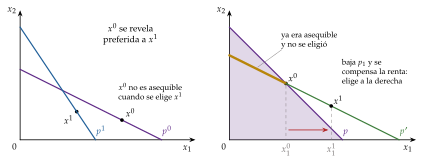
Fuente: elaboración propia a partir de Jehle y Reny (2011, cap. 2) y Mas-Colell, Whinston, y Green (1995, párr. 2.F).
Implicaciones del ADPR:
La demanda es homogénea de grado cero en precios y renta.86
El efecto sustitución (en el sentido de Slutsky) es no positivo: es la ley de la demanda compensada. Si cambian los precios de \(p\) a \(p'\) y se compensa la renta para que el consumidor pueda seguir comprando la cesta inicial, \(\overline{W}'=p'\cdot x(p,\overline{W})\), entonces87 \[(p'-p)\cdot\big[x(p',\overline{W}')-x(p,\overline{W})\big]\leq 0. \tag{27}\] Si solo cambia \(p_1\), \(\Delta p_1\,\Delta x_1\leq 0\). Gráficamente, si baja \(p_1\) y se compensa la renta, la nueva recta pasa por \(x^0\); las cestas de esa recta situadas a la izquierda de \(x^0\) ya eran asequibles con la recta inicial y no se eligieron, así que el consumidor elegirá una cesta a la derecha de \(x^0\), con más bien 1 (gráfico 13, segunda capa). Se obtiene el resultado de la ecuación de Slutsky sin hablar de utilidad.
El ADPR implica que la matriz de Slutsky es semidefinida negativa, pero no que sea simétrica.88 Por eso, con más de dos bienes, no basta para que exista una utilidad que racionalice la demanda; con dos bienes, sí (Rose, 1958).89 Kihlstrom, Mas-Colell y Sonnenschein (1976) estudian qué parte de la teoría de la demanda se sostiene solo con el axioma débil [ver tema 3.A.9].90
III.1.4. El axioma fuerte de la preferencia revelada
Si \(x^0\) se revela directamente preferida a \(x^1\), \(x^1\) a \(x^2\), …, y \(x^{k-1}\) a \(x^k\), decimos que \(x^0\) se revela indirectamente preferida a \(x^k\), aunque nunca se hayan comparado directamente (gráfico 14).
Axioma fuerte de la preferencia revelada (AFPR), de Houthakker (1950):91 si \(x^0\) se revela directa o indirectamente preferida a \(x^k\neq x^0\), entonces \(x^k\) no puede revelarse preferida a \(x^0\). Es la transitividad de las preferencias reveladas, y el AFPR implica el ADPR.
Teorema de Houthakker: una función de demanda cumple el AFPR si y solo si puede generarse maximizando unas preferencias racionales. La preferencia revelada y la teoría ordinal son, por tanto, equivalentes.92
Con un número finito de observaciones, el teorema de Afriat (1967) da la condición necesaria y suficiente para que los datos de precios y cantidades sean compatibles con la maximización de una utilidad continua, creciente y cóncava: el axioma generalizado (GARP, en la terminología de Varian, 1982), que admite empates. Es la base del contraste no paramétrico de la teoría con datos reales.93
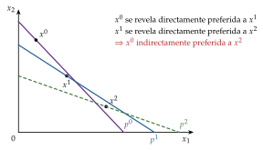
Fuente: elaboración propia a partir de Varian (2016, cap. 7).
III.1.5. Aplicaciones y valoración
Obtención de las curvas de indiferencia (Samuelson, 1948): las cestas del conjunto presupuestario en el que se eligió \(x^0\) se revelan peores que \(x^0\), y las que se revelan preferidas a \(x^0\) (directa o indirectamente, o porque tienen más de todos los bienes) son mejores. La curva de indiferencia que pasa por \(x^0\) está entre ambas regiones. Con más observaciones, a precios distintos, las dos regiones se acercan y acotan la curva cada vez mejor, que resulta convexa (gráfico 15).
Índices de precios: las comparaciones de bienestar con índices de Laspeyres y de Paasche se basan en este mismo razonamiento [ver tema 3.A.9].
Valoración:
permite obtener la teoría de la demanda sin recurrir al concepto de utilidad, a partir de hipótesis sobre la conducta observable, y demuestra que es equivalente a la teoría ordinal (Houthakker);
permite contrastar la teoría con datos finitos (Afriat, Varian);
su principal crítica es que identifica elección y preferencia (Sen, 1973): si la elección depende del contexto, de normas o de compromisos, lo que se «revela» no es necesariamente el bienestar del consumidor.94
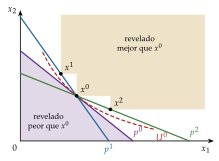
III.2. La producción doméstica
Idea: las tecnologías del consumo aplican la teoría de la producción a las decisiones de consumo. Los bienes comprados en el mercado no dan utilidad por sí mismos: son insumos con los que el hogar produce lo que de verdad le satisface.
Gary Becker (1965)95,96 propone ver el hogar como una pequeña fábrica que combina bienes de mercado y tiempo para producir los bienes que realmente se consumen (commodities): una comida, una noche de cine, el cuidado de los hijos. Es la base de la llamada nueva economía de la familia (New Home Economics).
Kelvin Lancaster (1966) propone la otra tecnología del consumo: los bienes producen características, \(z=Bx\), y la utilidad depende de las características. Su modelo completo y su papel en la diferenciación de productos se estudian en [ver tema 3.A.18]; aquí es el antecedente de los precios hedónicos (III.3).97
El modelo de Becker: el hogar maximiza \(U(Z_1,\dots,Z_m)\), donde cada commodity se produce con bienes de mercado y tiempo, \(Z_i=f_i(x_i,t_i)\), sujeto a dos restricciones: \[\sum_i p_i x_i=w\,t_w+V,\qquad \sum_i t_i+t_w=T, \tag{28}\] donde \(t_w\) es el tiempo de trabajo en el mercado, \(w\) el salario, \(V\) la renta no laboral y \(T\) el tiempo total disponible. Sustituyendo \(t_w\), las dos se funden en una sola restricción de renta completa: \[\sum_i\left(p_i x_i+w\,t_i\right)=w\,T+V. \tag{29}\]
La renta completa es la que obtendría el hogar si dedicara todo su tiempo al mercado. Con coeficientes fijos (\(x_i=b_iZ_i\), \(t_i=\tau_iZ_i\)), cada commodity tiene un precio sombra \(\pi_i=p_ib_i+w\,\tau_i\), que incluye el precio de los bienes y el coste de oportunidad del tiempo. El salario pasa a ser también un precio del consumo.
Implicaciones:
Al subir el salario se encarecen relativamente las actividades intensivas en tiempo: los hogares con salarios altos sustituyen tiempo por bienes (comida preparada, guarderías, servicio doméstico, electrodomésticos). Ayuda a explicar la incorporación de la mujer al mercado de trabajo y la externalización de las tareas domésticas; el reparto del tiempo entre trabajo de mercado, trabajo doméstico y ocio se estudia desde la oferta de trabajo en [ver tema 3.A.25].
Un cambio de precios afecta a la demanda de bienes también a través de la tecnología del hogar, lo que da lugar a nuevos efectos sustitución.
Reuben Gronau (1977) distingue entre trabajo doméstico y ocio: el tiempo no dedicado al mercado no es todo ocio.98
Valoración: extiende la teoría de la elección a decisiones antes ajenas a la economía, como la educación, el matrimonio o la fecundidad, y explica por qué el valor del tiempo condiciona el consumo. Muestra además que el PIB omite la producción doméstica, que no pasa por el mercado.
III.3. Precios hedónicos
III.3.1. Idea y origen
Muchos bienes son diferenciados: una vivienda, un coche o un ordenador son en realidad «paquetes» de características (superficie, ubicación, potencia, memoria…) que no se venden por separado. El método de los precios hedónicos descompone el precio observado del bien en el valor implícito de cada característica.
Su fundamento es el enfoque de características de Lancaster (III.2): el consumidor no obtiene utilidad de los bienes, sino de sus características. El tribunal sustituyó en el temario de 2023 la demanda de características por este método porque permite medir empíricamente el valor que los consumidores dan a cada característica.
Es también un método de preferencias reveladas: el precio que se paga por un bien revela cómo se valoran sus características.
Andrew Court (1939) acuña el término y estima la primera regresión hedónica, con automóviles;99 Zvi Griliches (1961) la convierte en un método para ajustar por calidad los índices de precios,100 y Sherwin Rosen (1974) le da fundamento teórico.101
III.3.2. La función hedónica y el modelo de Rosen
Si un bien se describe por un vector de características \(z=(z_1,\dots,z_k)\), su precio de mercado es una función \(p(z)\), la función hedónica. Su derivada parcial \(\partial p/\partial z_j\) es el precio implícito (o hedónico) de la característica \(j\): lo que el mercado paga por una unidad más de ella, manteniendo constantes las demás.
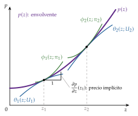
Fuente: elaboración propia a partir de Rosen (1974).
El modelo de Rosen (1974) da el fundamento de equilibrio de la función hedónica en un mercado competitivo de productos diferenciados:
Demanda: el consumidor maximiza \(U(z,y)\), con \(y\) un bien numerario, sujeto a \(p(z)+y=\overline{W}\). En el óptimo, para cada característica, \[\frac{\partial U/\partial z_j}{\partial U/\partial y}=\frac{\partial p(z)}{\partial z_j}: \tag{30}\] la relación marginal de sustitución entre la característica y el numerario se iguala a su precio implícito. Es la misma condición de tangencia del apartado I.2 (ecuación (12)), ahora sobre una «restricción presupuestaria» no lineal, \(p(z)\).
Curvas de puja y de oferta: cada consumidor tiene una función de puja \(\theta(z;\overline{U},\overline{W})\), lo máximo que pagaría por cada \(z\) manteniendo su utilidad \(\overline{U}\). Cada productor tiene una función de oferta \(\phi(z;\pi)\), lo mínimo que aceptaría por cada \(z\) obteniendo un beneficio \(\pi\).
Equilibrio: la función hedónica \(p(z)\) es la envolvente de las curvas de puja de los consumidores y de las de oferta de los productores. En cada variedad que se compra, la curva de puja del comprador y la de oferta del vendedor son tangentes a \(p(z)\) (gráfico 16). Por eso \(p(z)\) no es una curva de demanda ni de oferta, sino un lugar geométrico de equilibrios.
III.3.3. Estimación
Se estima la función hedónica con datos de precios y características de muchas variedades, por ejemplo con una forma semilogarítmica, \(\ln p_v=\beta_0+\sum_j\beta_j z_{vj}+u_v\) (también lineal, doble logarítmica o de Box-Cox), y se obtienen los precios implícitos.
Se estiman las demandas de cada característica relacionando esos precios implícitos con las cantidades elegidas y con las características de los compradores. Esta segunda etapa tiene un grave problema de identificación: precios y cantidades salen de la misma función estimada, por lo que hacen falta datos de varios mercados o restricciones adicionales.102
III.3.4. Aplicaciones
Índices de precios con ajuste de calidad: si un producto sube de precio porque es mejor, parte de la subida es más «cantidad» de calidad y no inflación.
El informe Boskin (1996) estimó que el IPC de Estados Unidos sobrestimaba la inflación en torno a 1,1 puntos al año, de los que unos 0,6 se debían a no corregir bien los cambios de calidad y la entrada de productos nuevos.103
El manual del IPCA de Eurostat recoge la regresión hedónica entre los métodos de ajuste por calidad y señala que se usa sobre todo en productos electrónicos y en los índices de precios de vivienda.104 En Estados Unidos, el BLS aplica regresiones hedónicas en unas 35 categorías del IPC, sobre todo ropa, electrodomésticos, teléfonos y servicios de telecomunicaciones.105 El IPC español, en cambio, recurre sobre todo a los precios de solapamiento, la opinión de expertos y la imputación.106
El INE elabora desde 2008 el Índice de Precios de Vivienda con un método mixto de estratificación y regresión hedónica: cada trimestre estima los precios implícitos de las características de las viviendas vendidas.107
Valoración de bienes sin mercado: el aire limpio, el ruido o la cercanía a un parque no tienen precio, pero se capitalizan en el precio de la vivienda. Comparando viviendas iguales salvo en esa característica se estima cuánto se paga por ella (método de valoración indirecta).108 Es una herramienta habitual del análisis coste-beneficio [ver tema 4.B.6].
Salarios hedónicos: el mismo razonamiento aplicado al mercado de trabajo descompone el salario en las características del puesto, como el riesgo de accidente, y permite estimar el «valor estadístico de la vida».
III.3.5. Limitaciones
El resultado depende de la forma funcional y de las características que se incluyan (sesgo por variables omitidas, multicolinealidad entre características).
La segunda etapa está mal identificada.
Supone un mercado en equilibrio, competitivo y con información perfecta sobre las características, algo dudoso, por ejemplo, en la vivienda.
Los precios implícitos son marginales: no sirven para valorar cambios grandes.
Los tres desarrollos acercan la teoría a lo observable: la preferencia revelada reconstruye las preferencias a partir de las elecciones y permite contrastarlas con datos (Afriat); la producción doméstica introduce el coste del tiempo, y los precios hedónicos miden cuánto se paga por cada característica de un bien.
Conclusión3 min
Recapitulación:
Hemos construido la demanda marshalliana a partir de unos pocos axiomas sobre las preferencias, de su representación mediante una función de utilidad y de la restricción presupuestaria. Sus propiedades (homogeneidad de grado cero, ley de Walras, agregaciones de Engel y Cournot) son restricciones contrastables. Su agregación en una demanda de mercado exige condiciones muy restrictivas: la forma polar de Gorman y, en el caso extremo, el efecto renta nulo (I).
Hemos analizado cómo responde la demanda a la renta y a los precios, y la descomposición de Slutsky en efecto sustitución y efecto renta, que explica la clasificación de los bienes y la diferencia entre relaciones brutas y netas (II).
Y hemos visto tres desarrollos que acercan la teoría a lo observable: la preferencia revelada, la producción doméstica y los precios hedónicos (III).
Valoración:
Desde el punto de vista lógico, es una de las construcciones más acabadas de la teoría económica: de las preferencias se llega a la demanda, y por la preferencia revelada (teorema de Houthakker) y la integrabilidad [ver tema 3.A.9] puede recorrerse el camino inverso, de la conducta observada a unas preferencias que la generan.
Su estatus empírico es más discutible:
las restricciones de homogeneidad y simetría se han rechazado con frecuencia al estimar sistemas de demanda con datos agregados, en parte por los problemas de agregación (I.3);109
Milton Friedman (1953) defendió que una teoría se juzga por sus predicciones y no por el realismo de sus supuestos: basta con que los consumidores se comporten como si maximizaran su utilidad;110
la economía conductual ha documentado desviaciones sistemáticas de los axiomas: la racionalidad limitada de Herbert Simon (1955), la teoría de las perspectivas de Kahneman y Tversky (1979), con la aversión a las pérdidas y la dependencia del marco, y el efecto dotación y la contabilidad mental de Richard Thaler (1980, 1985);111,112
y Amartya Sen (1977) criticó que reducir la conducta a una sola ordenación de preferencias, que sirve a la vez para describir la elección, el interés propio y el bienestar, convierte al individuo en un «tonto racional».113
Aun así, sigue siendo el punto de partida del análisis: los desarrollos conductuales la amplían más que sustituirla, el teorema de Afriat permite contrastarla con datos sin suponer formas funcionales y herramientas como los precios hedónicos la llevan a la medición de precios y del bienestar.
Extensiones y relación con otras partes del temario:
La dualidad (minimización del gasto, demanda hicksiana, ecuación de Slutsky e integrabilidad), la medición del bienestar y los sistemas completos de demanda que se estiman empíricamente (sistema lineal de gasto de Stone-Geary, translog, AIDS de Deaton y Muellbauer) [ver tema 3.A.9].114
La elección en condiciones de riesgo e incertidumbre [ver tema 3.A.10] y las decisiones intertemporales [ver tema 3.A.29], con su aplicación al consumo agregado y a los bienes duraderos [ver tema 3.A.33].
La demanda de mercado es una pieza del equilibrio parcial [ver tema 3.A.16] y general [ver tema 3.A.21]; la asignación del tiempo entre trabajo y ocio, de la oferta de trabajo [ver tema 3.A.25], y la demanda de características, de la diferenciación de productos [ver tema 3.A.18].
La teoría de la producción reproduce la misma estructura (isocuantas, relación técnica de sustitución, elasticidad de sustitución, CES) [ver tema 3.A.11].
Idea final: la teoría de la demanda del consumidor es el primer ladrillo del análisis de los mercados: sin entender cómo eligen los consumidores no puede explicarse cómo se forman los precios, ni medirse la inflación con bienes cuya calidad cambia, ni valorarse el bienestar que una política gana o pierde.
A. Anexo: el enfoque cardinal de Marshall
Este anexo no se canta. En la Introducción basta una frase: con utilidad cardinal y utilidad marginal del dinero constante, la demanda de cada bien depende solo de su precio y no hay efecto renta.
Idea: el enfoque cardinal, desarrollado por Marshall (1890),115 fue el precursor del modelo neoclásico. Se estudia por razones históricas: el gran resultado de la teoría de la demanda de la primera mitad del siglo XX es, precisamente, que no hace falta medir la utilidad para derivar la demanda.
Supuestos sobre la función de utilidad:
cardinal: las diferencias de utilidad tienen significado, no solo el orden; la utilidad es única salvo transformaciones afines positivas;116
aditiva y separable: \(U(x_1,\dots,x_n,M)=u_1(x_1)+\dots+u_n(x_n)+u(M)\), donde \(M\) es el dinero que no se gasta en los bienes;
creciente en cada bien y en el dinero;
utilidad marginal de cada bien decreciente, \(u_i''<0\);
utilidad marginal del dinero constante: con \(u(M)=M\), cada unidad monetaria adicional reporta la misma utilidad, \(u'(M)=1\).
Modelo: con dos bienes y una renta \(Y\), \[\max_{x_1,x_2,M}\ u_1(x_1)+u_2(x_2)+M\quad\text{s.a.}\quad p_1x_1+p_2x_2+M=Y. \tag{31}\] Las condiciones de primer orden dan \(u_i'(x_i)=\lambda p_i\) y \(\lambda=u'(M)=1\), de modo que \[u_i'(x_i)=p_i,\qquad i=1,2: \tag{32}\] el consumidor compra cada bien hasta que su utilidad marginal, medida en dinero, iguala su precio. La curva de demanda es la curva de utilidad marginal (gráfico 17) y, como la utilidad marginal es decreciente, tiene pendiente negativa. El área bajo ella mide la utilidad del consumo en dinero, de donde sale el excedente del consumidor de Dupuit y Marshall.
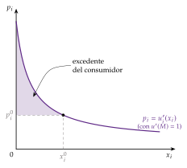
Fuente: elaboración propia a partir de Marshall (1890).
Implicaciones: la demanda de cada bien depende solo de su propio precio. No hay efecto renta, porque todo cambio de renta lo absorbe el dinero, ni efectos precio cruzados. Es el caso de las preferencias cuasilineales en el dinero (apartado I.3): por eso el excedente del consumidor es en él una medida exacta del bienestar.
Valoración:
la utilidad cardinal exige más información de la necesaria: para derivar la demanda basta con ordenar las cestas;
la utilidad marginal del dinero constante es poco realista y elimina el efecto renta, de modo que no puede explicar los bienes inferiores ni los Giffen;
Pareto (1906) muestra que la medición de la utilidad es innecesaria, y Hicks y Allen (1934) reconstruyen la teoría en términos ordinales.
La aditividad no elimina por sí sola los efectos cruzados. Lo que los elimina en el enfoque cardinal es la utilidad marginal del dinero constante. Con \(U=\ln x_1+x_2\), aditiva y separable, pero con el bien 2 (y no el dinero) como numerario de precio \(p_2\), las condiciones de primer orden dan \(1/x_1=\lambda p_1\) y \(1=\lambda p_2\), y por tanto \(x_1=p_2/p_1\): la demanda del bien 1 depende del precio del bien 2 a través de \(\lambda=1/p_2\). Solo si \(p_2=1\) (el dinero) desaparece el efecto cruzado.
B. Anexo: formas comunes de la función de utilidad
Forma polar de Gorman (FIU \(V=a(p)+b(p)\,\overline{W}\); apartado I.3): curvas de Engel rectas. Incluye:
Cuasilineales: \(U=\phi(x)+b\,y\), con \(b>0\), \(\phi'>0\) y \(\phi''<0\). Las dos primeras condiciones hacen las preferencias monótonas y la tercera, las curvas de indiferencia convexas. La RMS, \(\phi'(x)/b\), depende solo de \(x\): las curvas de indiferencia son traslaciones verticales unas de otras y, en solución interior, la demanda de \(x\) depende solo de los precios relativos, no de la renta (efecto renta nulo).
Homotéticas: \(U=f\big(g(x)\big)\) con \(g\) homogénea de grado uno y \(f\) creciente. La RMS es constante a lo largo de cada rayo desde el origen: las curvas de indiferencia son expansiones radiales unas de otras (no traslaciones), las curvas de Engel son rectas que parten del origen y las proporciones del gasto no dependen de la renta. Las homogéneas son un caso particular, y dentro de ellas la familia CES de la ecuación (5):
\(\sigma\to 0\): Leontief, \(U=\min\{x/a;\,y/b\}\);
\(\sigma\to\infty\): lineal, \(U=a\,x+b\,y\);
\(\sigma\to 1\): Cobb-Douglas, \(U=A\,x^{\alpha}y^{\beta}\), con \(A,\alpha,\beta>0\).117 Sus propiedades:
es monótona y estrictamente cuasicóncava (curvas estrictamente convexas), y sus curvas de indiferencia son asintóticas a los ejes, de modo que no hay soluciones de esquina con precios y renta positivos;
es homogénea de grado \(\alpha+\beta\) y, por tanto, homotética: las curvas de Engel son rectas que parten del origen, los bienes son normales y, por tanto, ordinarios;
su elasticidad de sustitución es constante e igual a uno;
la proporción de la renta que se gasta en cada bien es constante e independiente de los precios, \(\alpha/(\alpha+\beta)\) y \(\beta/(\alpha+\beta)\). Las demandas son \[x=\frac{\alpha}{\alpha+\beta}\cdot\frac{\overline{W}}{p_x},\qquad y=\frac{\beta}{\alpha+\beta}\cdot\frac{\overline{W}}{p_y}; \tag{33}\] si sube \(p_x\), el gasto en \(x\) no cambia y se compra menos (elasticidad-precio igual a \(-1\), elasticidad-renta igual a \(1\) y elasticidad cruzada nula);
en logaritmos es lineal, \(\ln U=\ln A+\alpha\ln x+\beta\ln y\), lo que facilita su estimación.
Stone-Geary: \(U=\prod_{i=1}^{n}(x_i-\gamma_i)^{\alpha_i}\), con \(\alpha_i>0\) y \(x_i>\gamma_i\), donde \(\gamma_i\) es un consumo mínimo o de subsistencia. No es homotética (las curvas de Engel son rectas que no pasan por el origen), pero sí tiene la forma polar de Gorman. Con \(\gamma_i=0\) es una Cobb-Douglas. Genera el sistema lineal de gasto, \(p_ix_i=p_i\gamma_i+\frac{\alpha_i}{\sum_j\alpha_j}\big(\overline{W}-\sum_jp_j\gamma_j\big)\).118
Formas flexibles: aproximaciones de segundo orden a una función cualquiera, que no imponen a priori las elasticidades. La translog (Christensen, Jorgenson y Lau, 1975) es una aproximación de segundo orden en logaritmos;119,120 el sistema AIDS de Deaton y Muellbauer (1980) parte de preferencias PIGLOG.121 Se estudian en [ver tema 3.A.9].
Utilidad isoelástica o CRRA: es una función de una sola variable, que se usa en la elección con riesgo y en la intertemporal, no una forma de preferencias sobre varios bienes: \[u(C)=\begin{cases}\dfrac{C^{1-\eta}-1}{1-\eta} & \text{si } \eta\geq 0,\ \eta\neq 1,\\[6pt] \ln C & \text{si } \eta=1.\end{cases} \tag{34}\] Es la única con aversión relativa al riesgo constante (igual a \(\eta\)) y un caso particular de las HARA; su elasticidad de sustitución intertemporal es \(1/\eta\) [ver tema 3.A.10] [ver tema 3.A.29].122
Preferencias entre consumo y trabajo en macroeconomía (para el test; se desarrollan en [ver tema 3.A.29]). Con \(C\) el consumo y \(N\) las horas trabajadas:
King, Plosser y Rebelo (KPR, 1988):123 \[u(C,N)=\frac{C^{1-\sigma}}{1-\sigma}\,v(1-N)\ \text{ si }\sigma\neq 1,\qquad u(C,N)=\ln C+v(1-N)\ \text{ si }\sigma=1, \tag{35}\] donde \(v\) es función del ocio, \(1-N\): creciente y cóncava si \(\sigma<1\), decreciente y convexa si \(\sigma>1\) (para que la utilidad crezca con el ocio). Son las preferencias compatibles con el crecimiento equilibrado: ante un aumento permanente del salario real, los efectos renta y sustitución sobre las horas se compensan y estas no tienen tendencia. Por eso se usan en los modelos de equilibrio general dinámico estocástico derivados del modelo de crecimiento neoclásico.
Greenwood, Hercowitz y Huffman (GHH, 1988):124 \[u(C,N)=\frac{1}{1-\sigma}\left(C-\psi\,\frac{N^{1+\theta}}{1+\theta}\right)^{1-\sigma}. \tag{36}\] Consumo y trabajo no son separables, pero la condición de oferta de trabajo, \(\psi N^{\theta}=w\), no depende del consumo: no hay efecto riqueza sobre las horas, que dependen solo del salario real. (El artículo, sobre la inversión específica y la utilización de la capacidad, es el que introduce estas preferencias.)
Jaimovich y Rebelo (JR, 2009):125 \[u(C_t,N_t)=\frac{\left(C_t-\psi N_t^{\theta}X_t\right)^{1-\sigma}-1}{1-\sigma},\qquad X_t=C_t^{\gamma}X_{t-1}^{1-\gamma},\quad\gamma\in[0,1]. \tag{37}\] El parámetro \(\gamma\) regula la intensidad del efecto riqueza a corto plazo sobre la oferta de trabajo, y la forma anida las dos anteriores: con \(\gamma=1\), \(X_t=C_t\) y se obtienen las KPR; con \(\gamma=0\), \(X_t\) es constante y se obtienen las GHH.
C. Anexo: aspectos relevantes para el test
Preguntas tipo test del tema (con la numeración del temario anterior, A.6): https://www.quia.com/quiz/6562883.html
C.1. Bienes, males y bienes neutrales
Se mira el signo de las utilidades marginales:
| Utilidad marginal | Tipo | Curvas de indiferencia |
|---|---|---|
| \(\partial U/\partial x>0\) | Bien | Decrecientes si el otro también es un bien |
| \(\partial U/\partial x<0\) | Mal | Crecientes si el otro es un bien; decrecientes si el otro también es un mal |
| \(\partial U/\partial x=0\) | Neutral | Rectas verticales u horizontales |
Fuente: elaboración propia.
Si los dos son bienes, las preferencias son monótonas (se prefiere más a menos) y las cestas preferidas están al nordeste. Si los dos son males, las curvas son decrecientes, pero la satisfacción aumenta hacia el origen. Si un bien es neutral, toda la renta se gasta en el otro.
El signo de las utilidades marginales no dice nada sobre la curvatura de las curvas de indiferencia.
C.2. Pendiente de la curva de indiferencia
Con signo, \(m(x,y)\equiv\left.\dfrac{dy}{dx}\right|_{U}=-\dfrac{\partial U/\partial x}{\partial U/\partial y}\). En el resto del tema se usa la RMS en valor absoluto, \(RMS_{xy}=-m\) (ecuación (3)).
C.3. Curvatura de las curvas de indiferencia
La curva es convexa si su pendiente aumenta a lo largo de ella, \(\left.\dfrac{d^2y}{dx^2}\right|_{U}=\dfrac{\partial m}{\partial x}+\dfrac{\partial m}{\partial y}\cdot m>0\); lineal si es nula, y cóncava si es negativa. Con dos bienes (\(m<0\)), las condiciones de la tabla 6 la garantizan, pero no son necesarias: lo que decide es la derivada total.
| Pendiente con signo, \(m\) | RMS en valor absoluto | Curva de indiferencia |
|---|---|---|
| \(\partial m/\partial x>0\) y \(\partial m/\partial y<0\) | \(\partial RMS/\partial x<0\) y \(\partial RMS/\partial y>0\) | Convexa |
| \(\partial m/\partial x=0\) y \(\partial m/\partial y=0\) | \(\partial RMS/\partial x=0\) y \(\partial RMS/\partial y=0\) | Lineal (sustitutivos perfectos) |
| \(\partial m/\partial x<0\) y \(\partial m/\partial y>0\) | \(\partial RMS/\partial x>0\) y \(\partial RMS/\partial y<0\) | Cóncavaa |
Fuente: elaboración propia.
Ejemplos rápidos: \(U=xy\) da \(RMS_{xy}=y/x\), que disminuye con \(x\) y aumenta con \(y\) (convexa); \(U=ax+by\) da \(RMS_{xy}=a/b\) (lineal); \(U=x^2+y^2\) da \(RMS_{xy}=x/y\) (cóncava).
Bibliografía
(Marshall 1890, lib. I, cap. I, §1).↩︎
El individualismo metodológico es un método muy utilizado en las ciencias sociales. Sostiene que todos los fenómenos sociales (su estructura y sus cambios) son en principio explicables a partir de elementos individuales, es decir, de las propiedades de los individuos: sus metas, sus creencias y sus acciones. Sus defensores lo ven como un método para explicar la evolución de la sociedad como el agregado de las decisiones de los particulares. En principio es un reduccionismo: explica las grandes entidades a partir de las más pequeñas.↩︎
La microeconomía es la parte de la teoría económica que describe la actividad económica al nivel de los agentes individuales. Estudia el comportamiento de los mercados desde la óptica del equilibrio parcial [ver tema 3.A.16] y del equilibrio general [ver tema 3.A.21]. Para ello estudia primero a los agentes que intervienen en un mercado, consumidores (demanda) y empresas (oferta), y después cómo interaccionan en un mercado (equilibrio parcial) o en el conjunto de mercados de una economía (equilibrio general). Estudia también a otros agentes, como las instituciones financieras o el Estado.↩︎
La microeconomía contemporánea considera esta separación estricta entre consumidores y productores una simplificación excesiva del proceso por el que los bienes se compran y se consumen.4 Lo muestran las «tecnologías del consumo», que aplican la teoría de la producción a las decisiones de consumo: el enfoque de características de Kelvin Lancaster (1966),5 la producción doméstica de Gary Becker (1965)6 y de Reuben Gronau (1977)7 o la economía de la información de George J. Stigler (1961), en la que la información sobre los bienes es costosa y obliga a un proceso de búsqueda que se combina con el bien físico.8↩︎
Los economistas clásicos desarrollaron una teoría objetiva del valor. Frente a ella, los neoclásicos desarrollaron una teoría subjetiva: el valor de los bienes y servicios depende de su capacidad para satisfacer necesidades.↩︎
El nombre de «Ysidro» se debe a su madre, Rosa Florentina Eroles, hija de un exiliado catalán de ideas liberales refugiado en Londres huyendo del absolutismo de Fernando VII.11 Es una de las pocas apariciones de España en la historia del pensamiento económico.↩︎
Jevons no distinguió explícitamente entre medición cardinal y ordinal de la utilidad, pero puede considerarse un precursor del enfoque ordinal.↩︎
(Samuelson 1938, 1948).↩︎
Contar con una función de utilidad permite aplicar las herramientas del cálculo diferencial y, por tanto, plantear y resolver un problema de optimización.↩︎
Consideramos únicamente bienes de consumo final: no se analiza la demanda de bienes de inversión ni de bienes duraderos, que requiere un enfoque dinámico [ver tema 3.A.33]. Tampoco se analiza la elección entre ocio y trabajo [ver tema 3.A.25].↩︎
(Debreu 1959, cap. 4; Mas-Colell, Whinston, y Green 1995, cap. 3).↩︎
La preferencia estricta (\(\succ\)) no es completa, porque no incluye la indiferencia, y la indiferencia (\(\sim\)) tampoco, porque no incluye la preferencia. Por eso se trabaja con la preferencia débil (\(\succcurlyeq\)), que incluye a las otras dos.↩︎
En algunos manuales la reflexividad se presenta como corolario de la completitud.↩︎
Es decir, \(\forall x^0\in S\), \(x^0\sim x^0\), pero \(x^0\nsucc x^0\).↩︎
La reflexividad parece lógica. Menos lo es la completitud: a veces cuesta evaluar alternativas y saber cuáles son nuestras preferencias. Y aún más fuerte es la transitividad, que puede fallar por varias razones:
las diferencias apenas perceptibles: si ofrecemos a alguien elegir entre dos tonos de gris casi iguales para pintar su habitación, se mostrará indiferente; si repetimos la comparación con tonos cada vez un poco más claros, seguirá indiferente en cada paso, pero entre el primero y el último (casi blanco) probablemente prefiera uno;
el problema del marco (framing): la forma en que se presentan las alternativas afecta a la elección ((Tversky y Kahneman 1981); (Kahneman y Tversky 1984));
los cambios en las preferencias: un fumador puede preferir fumar un cigarrillo al día a no fumar y no fumar a fumar más, pero, una vez que fuma uno, cambiar de preferencias y fumar más. Un individuo racional anticiparía ese cambio y se ataría a su decisión inicial.
Distinto es el caso de la paradoja de Condorcet: aunque cada individuo tenga preferencias transitivas, la preferencia colectiva obtenida por mayoría puede no serlo [ver tema 3.A.24].↩︎
Preorden, porque permite ordenar sin ser un orden en sentido matemático: un orden sería además antisimétrico (\(x^0\succcurlyeq x^1\) y \(x^1\succcurlyeq x^0 \Rightarrow x^0=x^1\)), y aquí dos cestas distintas pueden ser indiferentes. Completo, por el axioma de completitud. Algunos autores lo llaman preorden completo débil porque admite la indiferencia.↩︎
Se llaman así porque de su cumplimiento se deriva una función de utilidad de buen comportamiento o «regular».↩︎
En las preferencias lexicográficas, llamadas así por analogía con la ordenación de las palabras en un diccionario, el consumidor prefiere siempre la cesta con más cantidad del primer bien, sea cual sea la del resto; solo si ambas tienen la misma cantidad del primero mira el segundo, y así sucesivamente. Cumplen el preorden completo y la monotonía estricta, y generan una función de demanda, pero no admiten función de utilidad (Mas-Colell, Whinston, y Green (1995, ejemplo 3.C.1); Osborne y Rubinstein (2020)).↩︎
(Mas-Colell, Whinston, y Green 1995, def. 3.B.2 y 3.B.3).↩︎
Es el teorema de Arrow y Enthoven (1961). La convexidad de las preferencias es necesaria para el segundo teorema fundamental de la economía del bienestar (toda asignación eficiente puede descentralizarse como equilibrio competitivo con transferencias) y para la existencia del equilibrio general, pero no para el primero, al que le basta la insaciabilidad local [ver tema 3.A.22].35 Con muchos consumidores, la no convexidad de las preferencias individuales pierde importancia.36↩︎
Con convexidad estricta descartamos los sustitutivos perfectos (curvas de indiferencia rectas) y los complementarios perfectos (curvas en forma de L), cuyas preferencias son solo débilmente convexas.↩︎
Vilfredo Pareto, sucesor de Walras en Lausana, rechaza la utilidad cardinal. Hasta él, marginalismo y utilitarismo se habían fundido, aunque son cosas distintas: los marginalistas (Jevons, Walras) suponían que el bienestar individual podía medirse con una utilidad cardinal, y los utilitaristas (Bentham), que el bienestar social era la suma de los individuales, lo que exige comparar utilidades entre personas. Pareto rompe esa alianza y prefiere hablar de ofelimidad para subrayar que lo que el individuo desea no siempre es útil en el sentido de favorable: la ofelimidad expresa la intensidad de la preferencia de un individuo, no de la comunidad.37 Irving Fisher (1918) propuso sustituir el término por wantability.38↩︎
Es decir, si una cesta es al menos tan buena como otra, la función le asigna un valor mayor o igual, y viceversa. Con una sola implicación, una función constante «representaría» cualquier preferencia.↩︎
Véase Mas-Colell, Whinston, y Green (1995, párr. 3.C) o Jehle y Reny (2011, cap. 1). Una presentación gráfica de la concavidad y la cuasiconcavidad en Fuleky (s. f.).↩︎
Una transformación monótona creciente es \(V=f(U)\) con \(f\) estrictamente creciente: conserva el orden de todas las cestas. Por ejemplo, multiplicar por un número positivo, sumar una constante, tomar logaritmos (si \(U>0\)) o elevar a una potencia positiva (si \(U\geq 0\)).↩︎
Solo tienen sentido ordinal las propiedades y magnitudes de la función de utilidad que se conservan tras una transformación monótona creciente (por ejemplo, la cuasiconcavidad o la relación marginal de sustitución, pero no la concavidad ni el signo de las derivadas segundas). Las que no se conservan son propiedades cardinales.↩︎
Habitualmente la RMS se define en valor absoluto porque, con dos bienes, la pendiente de la curva de indiferencia es negativa. Así lo haremos en todo el tema: la pendiente de la curva es \(-RMS_{12}\).↩︎
En la literatura es frecuente llamar \(M\) o \(m\) a la renta del consumidor; Mas-Colell, Whinston, y Green (1995) hablan de riqueza, \(w\), para subrayar que el problema podría ser intertemporal y la restricción reflejar los recursos de toda la vida del agente. Aquí usaremos siempre \(\overline{W}\) y la llamaremos renta, como en [ver tema 3.A.9].↩︎
Para que el problema de optimización tenga solución, \(B(p,\overline{W})\) debe ser no vacío (para que haya elección), cerrado (si no incluyera la frontera, podría no haber una cesta preferida a todas las demás) y acotado (si fuera todo \(\mathbb{R}^n_+\), tampoco la habría).↩︎
Cerrado y acotado en \(\mathbb{R}^n\) equivale a compacto (teorema de Heine-Borel).↩︎
Es la utilidad marginal de la renta gastada en bienes útiles. En el enfoque cardinal, en cambio, la utilidad marginal del dinero se supone constante (ver el anexo A).↩︎
Esto permitirá, en el apartado II, hacer estática comparativa: estudiar cómo cambian las demandas ante cambios en los parámetros del problema.↩︎
Existe por el teorema de Weierstrass (utilidad continua y conjunto presupuestario compacto) y es única por la convexidad estricta de las preferencias.↩︎
Por el teorema del máximo de Berge.↩︎
Si se multiplican precios y renta por \(k>0\), el conjunto presupuestario no cambia: \(\{x: kp\cdot x\leq k\overline{W}\}=\{x: p\cdot x\leq\overline{W}\}\). Como el problema es el mismo, la solución también. Aplicando el teorema de Euler a una función homogénea de grado cero se obtiene la restricción en elasticidades \(\sum_j\varepsilon_{x_i,p_j}+\varepsilon_{x_i,\overline{W}}=0\) para cada bien \(i\), que veremos en el apartado II junto a las agregaciones de Engel y Cournot.↩︎
El nombre viene de la ley de Walras del equilibrio general, \(p\cdot z(p)=0\), que no es sino la suma de las restricciones presupuestarias de todos los consumidores: en el agregado también se agotan todos los recursos [ver tema 3.A.21].↩︎
Con solución interior y precios y renta estrictamente positivos, la demanda es diferenciable si (i) la utilidad es continua, estrictamente creciente, estrictamente cuasicóncava y dos veces diferenciable; (ii) \(\partial U(x^*)/\partial x_i>0\) para algún \(i\), y (iii) el determinante del hessiano orlado de la utilidad en \(x^*\) es distinto de cero.56↩︎
(Mas-Colell, Whinston, y Green 1995, prop. 3.D.3).↩︎
Basta con que alguna transformación monótona creciente de la FIU tenga esa forma, porque en ausencia de incertidumbre esas transformaciones no afectan al comportamiento.↩︎
(Gorman 1953, 1961).↩︎
Teorema de agregación de Gorman: si cada hogar \(h=1,\dots,H\) tiene una FIU de la forma (17) y una demanda positiva de cada bien, las demandas pueden agregarse y representarse por las de un hogar representativo con FIU \(V(p,\overline{W})=a(p)+b(p)\,\overline{W}\), donde \(a(p)\equiv\sum_h a_h(p)\) y \(\overline{W}\equiv\sum_h\overline{W}_h\) es la renta agregada.↩︎
(Mas-Colell, Whinston, y Green 1995, prop. 4.B.1).↩︎
El análisis de elasticidades lo desarrolló de forma pionera Alfred Marshall.65↩︎
Es el caso de la forma polar de Gorman con \(a_h(p)=0\) (apartado I.3, ecuación (17)).↩︎
Mas-Colell, Whinston, y Green (1995, párr. 2.E) llaman a esta función función de Engel, a la CRC senda de expansión de la riqueza y a \(\partial x_i/\partial w\) efecto riqueza. Aquí hablamos de renta y de efecto renta, como la ficha del tribunal.↩︎
(Engel 1857).↩︎
Los datos proceden de la Encuesta de Presupuestos Familiares del INE, la fuente de microdatos sobre el gasto de los hogares en España. Es anual desde 2006, con unos 24.000 hogares, cada uno de los cuales colabora dos años consecutivos, lo que permite construir un panel corto.70↩︎
Hay dos formas de definir la renta real constante, que coinciden cuando las variaciones de los precios son infinitesimales: la de Hicks, que mantiene constante el nivel de utilidad (el consumidor permanece en la misma curva de indiferencia), y la de Slutsky, que mantiene constante el poder adquisitivo (el consumidor puede seguir comprando la cesta inicial).↩︎
Se obtiene derivando respecto a \(p_i\) la identidad \(h_i(p,\overline{U})=x_i\big(p,E(p,\overline{U})\big)\), donde \(E(p,\overline{U})\) es la función de gasto, y aplicando el lema de Shephard [ver tema 3.A.9].↩︎
Se debe a la concavidad de la función de gasto [ver tema 3.A.9]. En el apartado III.1 se obtiene el mismo resultado con el axioma débil de la preferencia revelada, sin recurrir a la utilidad.↩︎
En elasticidades, la ecuación de Slutsky es \(\varepsilon_{x_i,p_j}=\varepsilon^{h}_{i,p_j}-s_j\,\varepsilon_{x_i,\overline{W}}\), donde \(\varepsilon^{h}_{i,p_j}\) es la elasticidad de la demanda compensada. El efecto renta es tanto mayor cuanto mayor es la participación \(s_j\) del bien cuyo precio cambia; para un bien que pesa poco en el presupuesto, demanda marshalliana y compensada casi coinciden.↩︎
El ejemplo clásico es el de un consumidor pobre que consume carne, cara, y patatas, baratas. Si sube el precio de las patatas, su renta real cae tanto que debe renunciar a la carne y comprar más patatas para seguir alimentándose: el efecto renta domina al efecto sustitución. El caso de las patatas en la hambruna irlandesa, sin embargo, no está bien documentado.76 La evidencia más sólida es la de Jensen y Miller (2008), que subvencionaron el arroz a hogares muy pobres de Hunan (China) y observaron que su consumo caía.77↩︎
(Mas-Colell, Whinston, y Green 1995, prop. 3.G.2 y ejercicio 3.G.4; Deaton y Muellbauer 1980b, cap. 2).↩︎
Por ejemplo, con dos bienes, \(s_2\,\varepsilon_{x_2,p_1}=-s_1\,(1+\varepsilon_{x_1,p_1})\): si la demanda del bien 1 es elástica (\(|\varepsilon_{x_1,p_1}|>1\)), al subir \(p_1\) se gasta menos en él y más en el bien 2; si es inelástica, ocurre lo contrario.↩︎
(Samuelson 1938, 1948).↩︎
Samuelson la propuso en 1938 para construir la teoría de la demanda sin recurrir a la utilidad, y en 1948 mostró que con ella pueden trazarse las curvas de indiferencia. Houthakker (1950) formuló el axioma fuerte. No hay que confundirla con la integrabilidad, que plantea Antonelli (1886): reconstruir la utilidad a partir de las funciones de demanda [ver tema 3.A.9].↩︎
Paul Samuelson recibió el Premio Nobel de Economía en 1970 «por el trabajo científico con el que ha desarrollado la teoría económica estática y dinámica y ha contribuido activamente a elevar el nivel de análisis de la ciencia económica».83↩︎
No del consumidor representativo: la agregación no conserva el axioma débil (apartado I.3).↩︎
Es decir: si en la situación 0 se eligió \(x^0\) pudiendo comprar \(x^1\), en cualquier otra situación en la que se elija \(x^1\) la cesta \(x^0\) no puede ser asequible. El axioma no exige que la renta se mantenga constante: compara dos situaciones de precios y renta cualesquiera.↩︎
Si \(p^1=kp^0\) y \(\overline{W}^1=k\overline{W}^0\) con \(k>0\), el conjunto presupuestario es el mismo. Si las cestas elegidas fueran distintas, cada una sería asequible cuando se eligió la otra, y se violaría el ADPR.↩︎
(Mas-Colell, Whinston, y Green 1995, prop. 2.F.1).↩︎
(Mas-Colell, Whinston, y Green 1995, prop. 2.F.2).↩︎
El AFPR es una condición necesaria y suficiente para que las elecciones observadas sean compatibles con la existencia de una función de utilidad que las genere (Mas-Colell, Whinston, y Green 1995, párr. 3.J).↩︎
Gary Becker recibió el Premio Nobel de Economía en 1992 por haber extendido el análisis microeconómico a un amplio abanico de conductas e interacciones humanas, incluidas las que no pasan por el mercado.96↩︎
(Rosen 1974).↩︎
Pensemos en el valor de vivir frente al Retiro: es la diferencia entre el precio de una vivienda frente al parque y el de otra idéntica en otra zona de Madrid, controlando por las características del barrio. Esa diferencia muestra cuánto se valora vivir frente al Retiro.↩︎
Thaler recibió el Premio Nobel de Economía en 2017 «por sus contribuciones a la economía del comportamiento».112 El efecto dotación consiste en valorar más un bien cuando se posee que cuando no se posee, y se explica por la aversión a las pérdidas: una pérdida pesa más que una ganancia de la misma cuantía ((Kahneman y Tversky 1979); (Kahneman, Knetsch, y Thaler 1990)). Con la contabilidad mental, el consumidor reparte su renta en «cuentas» separadas y evalúa cada decisión por separado, por ejemplo fijándose en el porcentaje de descuento y no en el ahorro absoluto. Las preferencias sociales muestran que la equidad también cuenta: no se considera justo que una ferretería suba el precio de las palas de nieve tras una nevada, aunque responda a la demanda.113↩︎
Angus Deaton recibió el Premio Nobel de Economía en 2015 «por su análisis del consumo, la pobreza y el bienestar».114↩︎
Los cardinalistas solían suponer además que las utilidades de distintas personas son comparables, pero es un supuesto distinto: la utilidad esperada de von Neumann y Morgenstern es cardinal y no permite comparaciones interpersonales [ver tema 3.A.10].↩︎
El límite se obtiene aplicando la regla de L’Hôpital al logaritmo de la CES.117 La función toma su nombre de Charles Cobb y Paul Douglas (1928), que la usaron como función de producción.118↩︎
No hay que confundirla con la aproximación de Kmenta (1967), un desarrollo de Taylor de la CES alrededor de \(\sigma=1\).↩︎
Como las constantes aditivas no afectan a las decisiones, el \(-1\) del numerador suele omitirse; se mantiene para que el límite cuando \(\eta\to 1\) sea \(\ln C\).↩︎